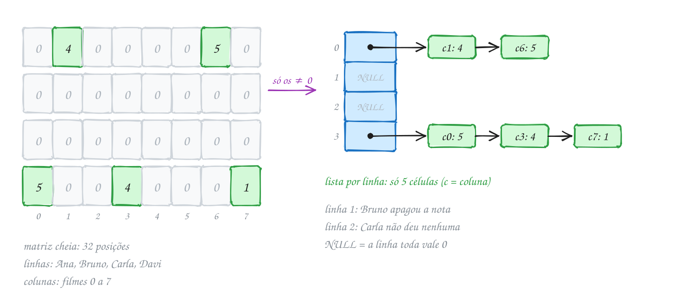
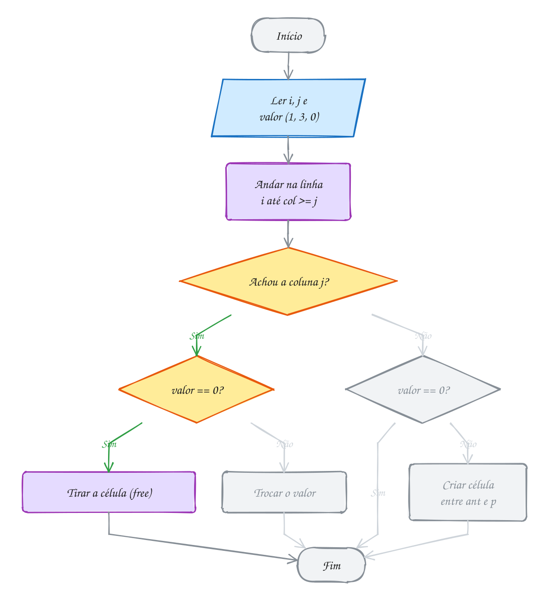
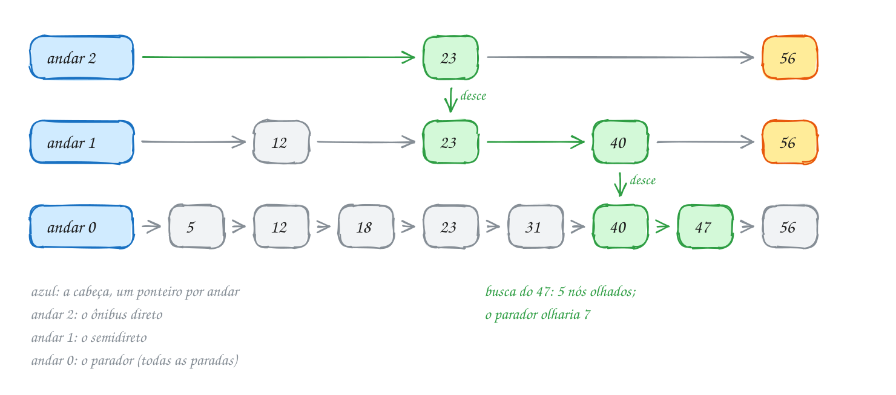
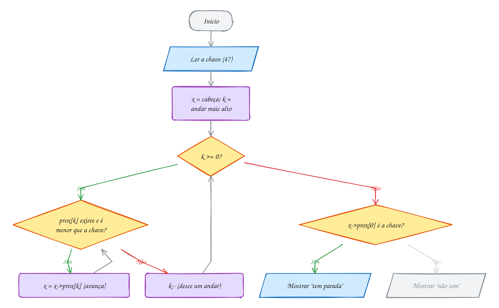
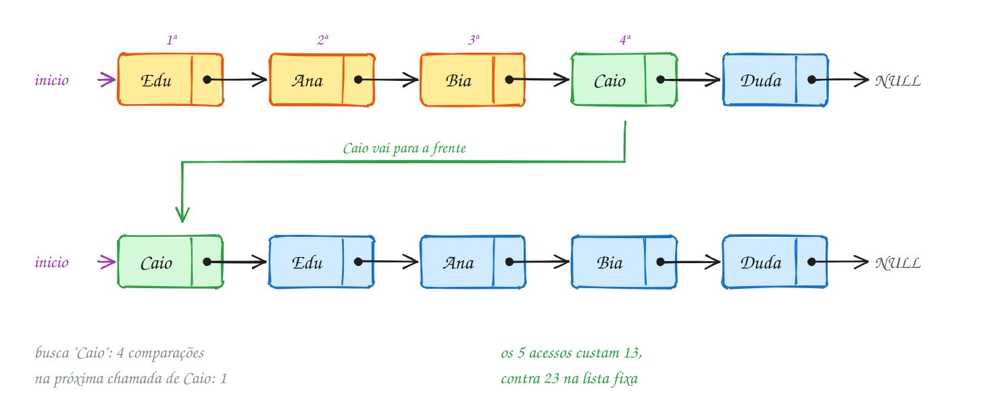
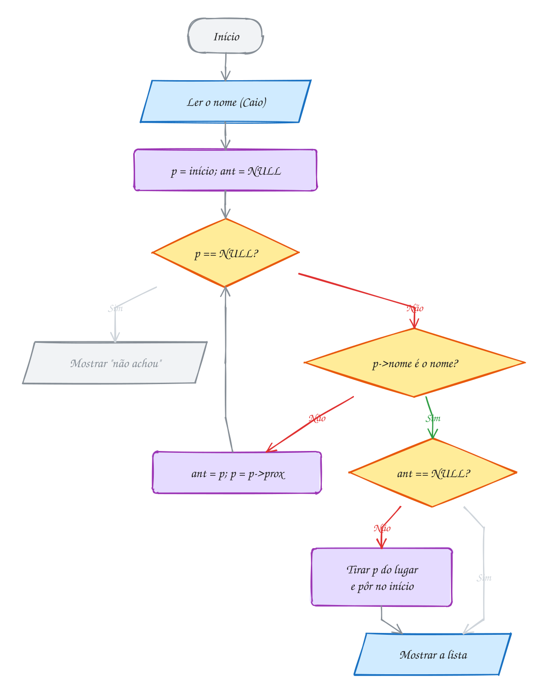
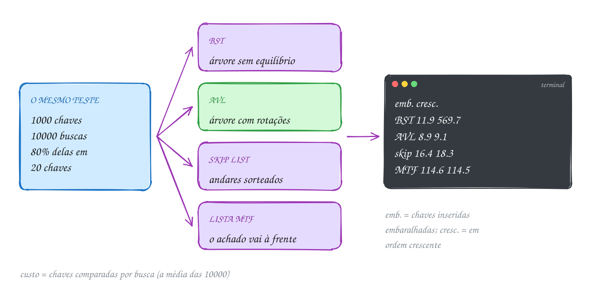
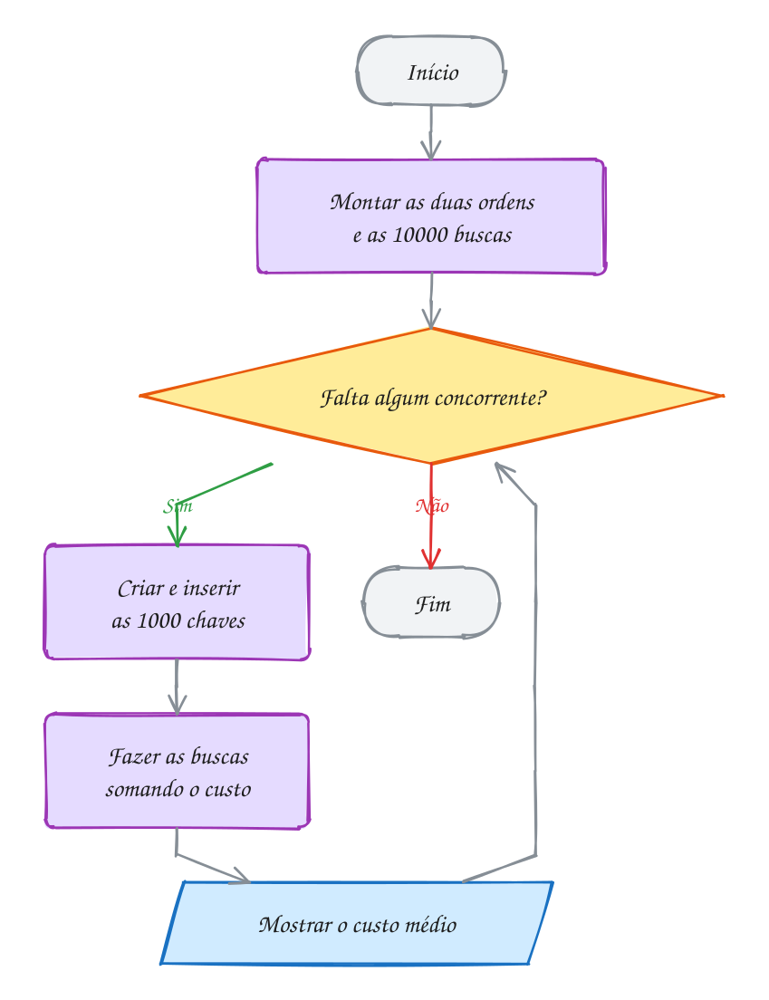

[!IMPORTANT] Mundo 8 · Técnicas de projeto · Rota do jogo: etapa 29 de 29
Missão: conhecer matriz esparsa, skip list e listas autoajustáveis.
Vem de: Módulo 24 · Busca de padrões em texto. Segue para: a prova: simulados e provas antigas.
Checkpoints desta fase:
- Ler os assuntos 0162 a 0165 e refazer os exemplos
- Resolver os 4 exercícios de cada assunto, escrevendo o código sozinho
- Fechar a lista prática (P2501 a P2530)
- Enfrentar os desafios do módulo
- Chefão: resolver as questões de prova do módulo sem consultar
Três estruturas nascidas de um problema específico, quase sempre uma lista encadeada com um truque a mais: matriz esparsa, skip list e listas autoajustáveis. No fim, BST, AVL, skip list e lista com mover para a frente respondem ao mesmo teste. É complemento: não cai direto na prova do PPGI.
Revise lista encadeada com o par ant e p (0076 a 0078), malloc e
free (0054), ponteiro para ponteiro (0049), TAD (0074), busca
sequencial (0089), BST (0099), AVL (0101), ponteiros para função (0050) e
void * (0051).
Cada assunto tem um TAD na pasta (esparsa.h, skip.h, autolista.h,
bancada.h). Nos desenhos de lista, o nó verde é o achado, os amarelos são os
comparados e os cinza, os que a busca nem tocou. Compile junto os .c de apoio:
gcc ~/LPEDC/material/A325.c ~/LPEDC/material/0163-skip.c -o ~/LPEDC/material/A325 && ~/LPEDC/material/A325
O custo de uma busca é quantas chaves ela comparou, o mesmo em qualquer máquina. Os sorteios usam um gerador próprio de uma linha: a mesma semente dá a mesma saída.
| # | Assunto |
|---|---|
| 0162 | Matriz esparsa |
| 0163 | Skip list |
| 0164 | Listas autoajustáveis |
| 0165 | Juntando tudo |
[!NOTE] Cada assunto é um capítulo: Conceito (a explicação), Exemplos de uso (programas que compilam sozinhos: rode com o comando abaixo de cada um e compare com a saída no fim do código) e Exercícios (cada um é um arquivo em
material/com o esqueleto, as dicas e o espaço para a resposta; resoluções em_respostas/25-estruturas-extras/).
Um serviço de streaming guarda a nota, de 1 a 5, que cada cliente deu a
cada filme. São 1 milhão de clientes e 50 mil filmes. Numa matriz int
cheia, isso dá 5 × 10¹⁰ posições de 4 bytes cada: 200 GB. O detalhe é
que cada cliente avalia uns 20 filmes, então mais de 99,9% dessas posições
guardam 0. Quase toda a memória vai para registrar que nada aconteceu.
Uma matriz quase toda de zeros se chama matriz esparsa, e ela aparece muito: quem segue quem numa rede social, as ligações de um grafo grande, as notas do streaming. A regra para guardá-la é uma só: zero não se guarda. Só as posições com valor diferente de zero ocupam memória; qualquer posição que não está guardada vale 0 (SZWARCFITER; MARKENZON, 2010). É como a lista de presença que anota só quem faltou: quem não aparece nela estava lá.
O jeito mais simples de seguir a regra é um vetor de triplas
(linha, coluna, valor), uma para cada valor não nulo, em ordem de linha e
depois de coluna (CELES; CERQUEIRA; RANGEL, 2004). As notas de Ana e Davi
ficam (0, 1, 4), (0, 6, 5), (3, 0, 5). O vetor de triplas é ótimo
para gravar a matriz num arquivo ou para uma matriz que não muda. Mas ele
sofre com mudança: uma nota nova no meio empurra todas as triplas seguintes
uma casa para a frente, como inserir num vetor ordenado.
Quando a matriz muda o tempo todo, a estrutura certa é a lista por
linha: um vetor de ponteiros, um para cada linha, e em cada um uma lista
encadeada (módulo 11) com as células daquela linha, em ordem de coluna
(SZWARCFITER; MARKENZON, 2010). Cada célula guarda a coluna, o valor e
o ponteiro para a próxima célula da mesma linha. Uma linha sem nenhum valor
é só um ponteiro NULL.
typedef struct Celula {
int col;
int valor; // nunca é 0
struct Celula *prox; // próxima célula da mesma linha
} Celula;
typedef struct {
int linhas, colunas, nao_zeros;
Celula **linha; // linha[i]: a lista da linha i
} Esparsa;
Ler m[i][j] vira percorrer a lista da linha i. Como as células estão em
ordem de coluna, você para assim que encontrar a coluna j ou passar dela.
Se a célula não apareceu, o valor é 0. Repare no custo: ele depende de
quantas células a linha tem, não do tamanho da matriz. Ler uma nota do
cliente que avaliou 20 filmes olha no máximo 20 células, por maior que seja
o catálogo.
Gravar m[i][j] = v é uma inserção ordenada (assunto 0078): ande na
linha com dois ponteiros, o anterior e o atual, até a posição da coluna j.
Há uma regra a mais, e ela vem direto do "zero não se guarda". Se a célula
já existe e o valor novo é 0, a célula sai da lista e é liberada
(FEOFILOFF, 2009). Assim, gravar cai em um de quatro casos: trocar o valor
de uma célula que existe, remover a célula quando o valor novo é 0, ignorar
um 0 gravado numa posição que já era 0, ou criar uma célula nova.
Por fim, quando a lista compensa? Cada Celula ocupa 16 bytes em 64 bits
(dois int e um ponteiro), contra os 4 bytes de um int na matriz cheia.
Então a lista só ganha quando menos de 1/4 das posições têm valor. No
streaming, os 2 × 10⁷ valores dão 2 × 10⁷ células de 16 bytes, uns
320 MB, contra os 200 GB da matriz cheia.
[!WARNING] Se gravar 0 numa célula existente só trocasse o valor, a célula guardaria um 0 e
nao_zerosmentiria. Toda operação que pode gerar zero (gravar, somar, subtrair) precisa remover a célula.
Uma locadora tem 4 clientes (linhas 0 a 3) e 8 filmes (colunas 0 a 7). Chegam
seis notas e Bruno apaga a dele: das 32 posições, sobram 5 células. A linha de
Carla é NULL:

No TAD (esparsa.h, esparsa.c), esp_define anda na linha com dois
ponteiros, ant e p, como na lista ordenada:
void esp_define(Esparsa *m, int i, int j, int valor) {
Celula *ant = NULL;
Celula *p = m->linha[i];
while (p != NULL && p->col < j) { // a linha está em ordem de coluna
ant = p;
p = p->prox;
}
if (p != NULL && p->col == j) { // a célula já existe
if (valor != 0) {
p->valor = valor;
return;
}
if (ant == NULL) { // virou zero: sai da lista
m->linha[i] = p->prox;
} else {
ant->prox = p->prox;
}
free(p);
m->nao_zeros--;
return;
}
if (valor == 0) {
return; // já era zero: nada a guardar
}
Celula *nova = aloca(sizeof(Celula)); // entra entre ant e p
nova->col = j;
nova->valor = valor;
nova->prox = p;
if (ant == NULL) {
m->linha[i] = nova;
} else {
ant->prox = nova;
}
m->nao_zeros++;
}
(O esparsa.c também confere i e j.) O programa da locadora:
#include <stdio.h>
#include "esparsa.h"
int main(void) {
Esparsa *notas = esp_cria(4, 8); // 4 clientes x 8 filmes, tudo zero
esp_define(notas, 0, 6, 5); // Ana deu 5 ao filme 6
esp_define(notas, 0, 1, 4); // entra antes do 6: a linha fica em ordem
esp_define(notas, 1, 3, 2);
esp_define(notas, 3, 7, 1);
esp_define(notas, 3, 0, 5);
esp_define(notas, 3, 3, 4);
printf("Davi deu %d ao filme 3\n", esp_valor(notas, 3, 3));
printf("Carla deu %d ao filme 5\n", esp_valor(notas, 2, 5));
esp_define(notas, 1, 3, 0); // Bruno apagou a nota: a célula sai
printf("Notas guardadas: %d de %d\n", notas->nao_zeros, 4 * 8);
esp_mostra(notas);
esp_libera(notas);
return 0;
}
// Saída:
// Davi deu 4 ao filme 3
// Carla deu 0 ao filme 5
// Notas guardadas: 5 de 32
// 0 4 0 0 0 0 5 0
// 0 0 0 0 0 0 0 0
// 0 0 0 0 0 0 0 0
// 5 0 0 4 0 0 0 1
esp_define cai em um de quatro casos (trocar, remover, ignorar ou criar). O
verde é Bruno apagando a nota: a coluna 3 existe e o valor novo é 0:

Exemplo A323 · As entregas em triplas
#include <stdio.h>
#include <stdlib.h>
#define LIN 5 // entregadores
#define COL 6 // bairros
typedef struct {
int lin, col, valor;
} Tripla;
// ordem de leitura: por linha e, dentro da linha, por coluna
int compara(const void *a, const void *b) {
const Tripla *x = a;
const Tripla *y = b;
if (x->lin != y->lin) {
return x->lin - y->lin;
}
return x->col - y->col;
}
int main(void) {
int entregas[LIN][COL] = {
{0, 0, 7, 0, 0, 0},
{3, 0, 0, 0, 0, 2},
{0, 0, 0, 0, 0, 0},
{0, 4, 1, 0, 0, 0},
{0, 0, 5, 0, 6, 0},
};
// compactar: uma tripla para cada valor diferente de zero
Tripla t[LIN * COL];
int n = 0;
for (int i = 0; i < LIN; i++) {
for (int j = 0; j < COL; j++) {
if (entregas[i][j] != 0) {
t[n++] = (Tripla){i, j, entregas[i][j]};
}
}
}
printf("%d triplas:", n);
for (int k = 0; k < n; k++) {
printf(" (%d,%d,%d)", t[k].lin, t[k].col, t[k].valor);
}
printf("\nCheia: %zu bytes; triplas: %zu bytes\n", sizeof entregas, n * sizeof(Tripla));
// transpor: troca linha com coluna e reordena (agora bairro x entregador)
for (int k = 0; k < n; k++) {
int aux = t[k].lin;
t[k].lin = t[k].col;
t[k].col = aux;
}
qsort(t, n, sizeof(Tripla), compara);
// as triplas de um mesmo bairro ficaram juntas: uma passada soma cada um
printf("Entregas por bairro:\n"); // bairro sem tripla não aparece
for (int k = 0; k < n;) {
int bairro = t[k].lin, soma = 0;
printf(" bairro %d:", bairro);
while (k < n && t[k].lin == bairro) {
printf(" e%d=%d", t[k].col, t[k].valor);
soma += t[k].valor;
k++;
}
printf(" -> %d\n", soma);
}
return 0;
}
// Saída:
// 7 triplas: (0,2,7) (1,0,3) (1,5,2) (3,1,4) (3,2,1) (4,2,5) (4,4,6)
// Cheia: 120 bytes; triplas: 84 bytes
// Entregas por bairro:
// bairro 0: e1=3 -> 3
// bairro 1: e3=4 -> 4
// bairro 2: e0=7 e3=1 e4=5 -> 13
// bairro 4: e4=6 -> 6
// bairro 5: e1=2 -> 2
gcc ~/LPEDC/material/A323.c ~/LPEDC/material/0162-esparsa.c -o ~/LPEDC/material/A323 && ~/LPEDC/material/A323
Exemplo A324 · O total de cada pedido
#include <stdio.h>
#include "0162-esparsa.h"
#define PRODUTOS 1000 // o catálogo inteiro
int main(void) {
// preço de cada produto do catálogo, em centavos (vetor cheio)
int preco[PRODUTOS];
for (int j = 0; j < PRODUTOS; j++) {
preco[j] = 250 + (j % 40) * 50;
}
// 4 pedidos x 1000 produtos; cada pedido leva poucos itens
Esparsa *pedidos = esp_cria(4, PRODUTOS);
esp_define(pedidos, 0, 12, 2); // pedido 0: 2 unidades do produto 12
esp_define(pedidos, 0, 731, 1);
esp_define(pedidos, 1, 40, 6);
esp_define(pedidos, 2, 5, 1);
esp_define(pedidos, 2, 999, 3);
esp_define(pedidos, 2, 500, 2);
esp_define(pedidos, 3, 12, 1);
// total[i] = soma de quantidade x preço, só nas células da linha i
int contas = 0;
for (int i = 0; i < pedidos->linhas; i++) {
int total = 0;
for (const Celula *c = pedidos->linha[i]; c != NULL; c = c->prox) {
total += c->valor * preco[c->col];
contas++;
}
printf("Pedido %d: R$ %d,%02d\n", i, total / 100, total % 100);
}
printf("Multiplicações: %d (a matriz cheia faria %d)\n", contas, 4 * PRODUTOS);
esp_libera(pedidos);
return 0;
}
// Saída:
// Pedido 0: R$ 25,00
// Pedido 1: R$ 15,00
// Pedido 2: R$ 96,00
// Pedido 3: R$ 8,50
// Multiplicações: 7 (a matriz cheia faria 4000)
gcc ~/LPEDC/material/A324.c ~/LPEDC/material/0162-esparsa.c -o ~/LPEDC/material/A324 && ~/LPEDC/material/A324
Exercício E967 · ★☆☆
Um app de delivery guarda as notas (1 a 5) que 4 clientes deram a 10 restaurantes numa matriz esparsa (esparsa.h). Escreva int resumo_linha(const Esparsa *m, int i, int *qtd): percorre só as células da linha i, devolve a soma das notas e guarda em *qtd quantas notas a linha tem. No main (a matriz já está montada), mostre a média de cada cliente:
Saída esperada:
Cliente 0: 3 notas, média 4.00
Cliente 1: 1 nota, média 2.00
Cliente 2: 0 notas
Cliente 3: 4 notas, média 3.50
gcc ~/LPEDC/material/E967.c ~/LPEDC/material/0162-esparsa.c -o ~/LPEDC/material/E967 && ~/LPEDC/material/E967
Exercício E969 · ★★☆
A matriz notas tem os clientes nas linhas e os filmes nas colunas. A locadora agora quer o contrário: a média de cada FILME. Andar por coluna numa lista por linha é ruim (teria que visitar todas as linhas). Então:
colunas trocadas (m->colunas x m->linhas), percorrendo as células de m;
quantas notas ele tem e a média; libere as duas matrizes.
Saída esperada:
Filme 0: 2 notas, média 4.50
Filme 2: 3 notas, média 2.67
Filme 5: 1 nota, média 1.00
Células: 6 e 6
gcc ~/LPEDC/material/E969.c ~/LPEDC/material/0162-esparsa.c -o ~/LPEDC/material/E969 && ~/LPEDC/material/E969
Exercício E970 · ★★☆
Escreva do zero uma matriz esparsa de vendas, sem usar o esparsa.h: uma lista encadeada por linha, células ordenadas por coluna, com os campos col, valor e prox, e a struct Esparsa (linhas, colunas, nao_zeros e o vetor de listas). Faça cria, define (insere no lugar certo ou troca o valor), mostra_linha (cada valor com %3d, zeros inclusos) e libera. Grave, nesta ordem, as vendas (vendedor, dia, valor) de 2 vendedores em 7 dias: (0,5,30) (1,4,40) (0,2,20) (1,1,12) (0,0,15). Compile com -fsanitize=address: não pode haver vazamento nem acesso inválido.
Saída esperada:
Vendedor 0: 15 0 20 0 0 30 0
Vendedor 1: 0 12 0 0 40 0 0
Células: 5
gcc ~/LPEDC/material/E970.c ~/LPEDC/material/0162-esparsa.c -o ~/LPEDC/material/E970 && ~/LPEDC/material/E970
Exercício E971 · ★★★
Uma rede de farmácias guarda o estoque numa matriz esparsa filial x produto (esparsa.h). No fim do dia chega a matriz de movimento: entrada é positiva, venda é negativa. Escreva Esparsa *soma(const Esparsa *a, const Esparsa *b), que devolve uma NOVA Esparsa com a + b, sem usar esp_valor e sem esp_define: monte cada linha do resultado intercalando as duas listas, como no merge do merge sort. Quando a soma der 0, a célula não entra. No main (as duas matrizes já estão montadas), mostre o estoque novo:
Saída esperada:
Estoque novo:
4 0 0 0 9 0
0 0 0 3 0 0
0 2 0 0 0 0
Células: 4
gcc ~/LPEDC/material/E971.c ~/LPEDC/material/0162-esparsa.c -o ~/LPEDC/material/E971 && ~/LPEDC/material/E971
Uma rodovia tem paradas de ônibus nos km 5, 12, 18, 23, 31, 40, 47 e 56. O ônibus parador para em todas; o semidireto para em algumas; o direto, só nas principais. Para chegar ao km 47, você não pega o parador desde o começo. Vai de direto até onde der sem passar do 47, troca para o semidireto e só no fim pega o parador.
Uma lista ordenada (assunto 0078) é o ônibus parador: achar uma chave custa O(n), porque é preciso passar por todos os nós anteriores. A busca binária não serve, já que a lista não tem índice para pular ao meio. A BST e a AVL (módulo 14) resolvem isso trocando a lista por uma árvore e equilibrando-a com rotações.
A skip list resolve de outro jeito: fica com a lista ordenada e
acrescenta as linhas expressas, os andares (PUGH, 1990). O andar 0 é a
lista completa, com todos os nós. O andar 1 liga só parte deles, o andar 2
menos ainda, e assim por diante. Cada nó, em vez de um único ponteiro
prox, tem um vetor deles: prox[k] é o próximo nó no andar k. Uma
cabeça, um nó sem chave, está em todos os andares e é o ponto de
partida de toda busca (MORIN, 2013, cap. 4).
Buscar é a viagem de ônibus. Comece na cabeça, no andar mais alto. Olhe o próximo nó do andar. Se a chave dele é menor que a procurada, avance para ele. Se ela já passou da procurada, ou se não há próximo, desça um andar e repita. Quando chegar ao andar 0 e não puder mais avançar, o próximo nó é a chave procurada ou ela não existe. Com as paradas acima, procurar o 47 anda no andar 2 até o 23 (o próximo, 56, já passou), desce, anda até o 40 no andar 1, desce, e no andar 0 o próximo é o 47.
E quem decide em quantos andares cada nó aparece? Uma moeda (PUGH, 1990). Todo nó novo entra no andar 0 e, enquanto der cara, sobe mais um. Em média, metade dos nós chega ao andar 1, um quarto ao andar 2, um oitavo ao andar 3. Isso imita os andares de uma lista "perfeita", em que cada andar tem metade dos nós do de baixo, só que sem nunca reorganizar nada.
Inserir começa por uma busca, com um cuidado: em cada andar, guarde o
último nó visitado antes de descer. Esses nós ficam num vetor antes, e
antes[k] é o nó depois do qual o novo entra no andar k. Depois, sorteie
os andares do nó novo e ligue-o após antes[k] em cada um, como numa
inserção em lista comum. A remoção usa o mesmo vetor para desligar o nó de
cada andar (SEDGEWICK, 1998, cap. 13).
O custo é O(log n) esperado. "Esperado" quer dizer na média dos sorteios da moeda: uma sequência de azar pode deixar a lista ruim, mas é muito improvável. Com 1 milhão de chaves, a busca olha uns 40 nós, contra meio milhão na lista simples. A AVL dá garantia de pior caso; a skip list troca essa garantia por um código sem rotações.
Falta a memória. Se o nó declara prox[SKIP_MAX] com SKIP_MAX 12, todo
nó ocupa 104 bytes, mesmo usando em média 2 ponteiros. A saída é um
membro vetor flexível: o último campo da struct é declarado sem
tamanho, struct NoSkip *prox[];, e o malloc pede só o necessário,
sizeof(NoSkip) + andares * sizeof(NoSkip *) (CPPREFERENCE, s.d.).
[!WARNING] Na remoção, o nó sai de todos os andares em que aparece. Se o 23 sair só do andar 0 e for liberado, a cabeça continua apontando para ele no andar 2: ponteiro solto (assunto 0057). O E976 pede essa remoção.
As paradas de uma rodovia, nos km 5 a 56, entram com andares prontos: o 23 e o 56 em 3, o 12 e o 40 em 2, os outros só no 0. A busca pelo 47 anda no andar 2 até o 23, desce, anda até o 40, desce, e o próximo no andar 0 é o 47:

O TAD fica em skip.h e skip.c. O nó e a busca:
#define SKIP_MAX 12 // andares no máximo: dá para uns 4 mil nós (2 elevado a 12)
typedef struct NoSkip {
int chave;
int andares; // em quantos andares o nó aparece
struct NoSkip *prox[SKIP_MAX]; // prox[k]: o próximo no andar k
} NoSkip;
bool skip_busca(const Skip *s, int chave, int *passos) {
int olhados = 0;
const NoSkip *x = &s->cabeca;
for (int k = s->andares - 1; k >= 0; k--) { // do andar mais alto ao 0
while (x->prox[k] != NULL) {
olhados++;
if (x->prox[k]->chave >= chave) {
break; // o próximo já passou (ou é a chave): desce
}
x = x->prox[k]; // o próximo ainda é menor: avança
}
}
if (passos != NULL) {
*passos = olhados;
}
x = x->prox[0]; // no andar 0, o próximo é a chave ou ela não existe
return x != NULL && x->chave == chave;
}
Para o desenho sair igual em toda execução, o exemplo usa
skip_insere_andares, com andares prontos; no uso normal, skip_insere joga
a moeda. O skip_mostra imprime cada chave sempre na mesma coluna:
#include <stdio.h>
#include "skip.h"
void procura(const Skip *s, int km) {
int passos;
bool achou = skip_busca(s, km, &passos);
printf("km %d: %s, %d nós olhados\n", km, achou ? "tem parada" : "não tem parada", passos);
}
int main(void) {
int km[] = {5, 12, 18, 23, 31, 40, 47, 56};
int andares[] = {1, 2, 1, 3, 1, 2, 1, 3}; // o que a moeda "deu"
Skip *linha = skip_cria(0);
for (int i = 0; i < 8; i++) {
skip_insere_andares(linha, km[i], andares[i]);
}
skip_mostra(linha);
procura(linha, 47);
procura(linha, 20);
skip_libera(linha);
return 0;
}
// Saída:
// andar 2: 23 56
// andar 1: 12 23 40 56
// andar 0: 5 12 18 23 31 40 47 56
// km 47: tem parada, 5 nós olhados
// km 20: não tem parada, 5 nós olhados
O laço de dentro avança no andar, o de fora desce. O caminho verde é a busca do 47: uma vez no andar 2, uma no andar 1, nenhuma no andar 0:

Exemplo A325 · A moeda decide os andares
#include <stdio.h>
#include "0163-skip.h"
#define N 1000
int main(void) {
Skip *s = skip_cria(2024); // a mesma semente dá sempre a mesma skip list
for (int i = 1; i <= N; i++) {
skip_insere(s, i * 10); // códigos de produto: 10, 20, ..., 10000
}
// quantos nós em cada andar: anda pela lista daquele andar
int ponteiros = 0;
for (int k = 0; k < s->andares; k++) {
int qtd = 0;
for (const NoSkip *x = s->cabeca.prox[k]; x != NULL; x = x->prox[k]) {
qtd++;
}
ponteiros += qtd;
printf("andar %2d: %4d nós (esperado ~%d)\n", k, qtd, N >> k);
}
printf("Ponteiros em uso: %d, média de %.2f por nó\n", ponteiros, (double)ponteiros / N);
// a média de nós olhados, buscando cada uma das 1000 chaves
long total = 0;
int pior = 0;
for (int i = 1; i <= N; i++) {
int passos;
skip_busca(s, i * 10, &passos);
total += passos;
if (passos > pior) {
pior = passos;
}
}
printf("Busca: média de %.1f nós olhados, pior %d\n", (double)total / N, pior);
printf("Lista simples: média de %.1f, pior %d\n", (N + 1) / 2.0, N);
skip_libera(s);
return 0;
}
// Saída:
// andar 0: 1000 nós (esperado ~1000)
// andar 1: 503 nós (esperado ~500)
// andar 2: 251 nós (esperado ~250)
// andar 3: 129 nós (esperado ~125)
// andar 4: 62 nós (esperado ~62)
// andar 5: 27 nós (esperado ~31)
// andar 6: 13 nós (esperado ~15)
// andar 7: 6 nós (esperado ~7)
// andar 8: 4 nós (esperado ~3)
// andar 9: 2 nós (esperado ~1)
// Ponteiros em uso: 1997, média de 2.00 por nó
// Busca: média de 18.2 nós olhados, pior 31
// Lista simples: média de 500.5, pior 1000
gcc ~/LPEDC/material/A325.c ~/LPEDC/material/0163-skip.c -o ~/LPEDC/material/A325 && ~/LPEDC/material/A325
Exemplo A326 · A agenda do barbeiro
#include <stdio.h>
#include "0163-skip.h"
// horário em minutos desde a meia-noite: 570 é 9h30
void mostra_hora(int min) {
printf("%02dh%02d", min / 60, min % 60);
}
int main(void) {
// os clientes marcam fora de ordem; a skip list mantém tudo em ordem
int hora[] = {570, 540, 660, 600, 630, 720};
int andares[] = {1, 2, 1, 3, 2, 1};
Skip *agenda = skip_cria(0);
for (int i = 0; i < 6; i++) {
skip_insere_andares(agenda, hora[i], andares[i]);
}
printf("Agenda (%d andares):\n", agenda->andares);
skip_mostra(agenda);
// o cliente das 10h cancela: o 600 sai dos 3 andares dele, e o andar 2,
// que só tinha ele, fica vazio
skip_remove(agenda, 600);
printf("Sem o das 10h00 (%d andares):\n", agenda->andares);
skip_mostra(agenda);
// atender em ordem: o primeiro do andar 0 é sempre o próximo horário
printf("Atendimentos:");
while (agenda->cabeca.prox[0] != NULL) {
int proximo = agenda->cabeca.prox[0]->chave;
printf(" ");
mostra_hora(proximo);
skip_remove(agenda, proximo); // tirar o primeiro: nada para procurar
}
printf("\nNa agenda: %d\n", agenda->n);
skip_libera(agenda);
return 0;
}
// Saída:
// Agenda (3 andares):
// andar 2: 600
// andar 1: 540 600 630
// andar 0: 540 570 600 630 660 720
// Sem o das 10h00 (2 andares):
// andar 1: 540 630
// andar 0: 540 570 630 660 720
// Atendimentos: 09h00 09h30 10h30 11h00 12h00
// Na agenda: 0
gcc ~/LPEDC/material/A326.c ~/LPEDC/material/0163-skip.c -o ~/LPEDC/material/A326 && ~/LPEDC/material/A326
Exercício E973 · ★☆☆
Escreva int maior(const Skip *s, int *avancos), que devolve a maior chave da skip list (que não pode estar vazia) e guarda em *avancos quantas vezes o ponteiro avançou. Não ande só pelo andar 0: use os andares de cima, como o ônibus direto. No main (as duas listas já estão montadas), teste com as paradas do texto e com 1000 códigos sorteados:
Saída esperada:
Paradas: maior 56, 2 avanços (pelo andar 0 seriam 8)
Códigos: maior 10000, 13 avanços (pelo andar 0 seriam 1000)
gcc ~/LPEDC/material/E973.c ~/LPEDC/material/0163-skip.c -o ~/LPEDC/material/E973 && ~/LPEDC/material/E973
Exercício E975 · ★★☆
A moeda da skip list não precisa ser honesta. Com probabilidade 1/4 de subir, os nós ficam mais baixos: menos ponteiros. Será que a busca fica muito mais lenta? Faça o experimento com 4000 chaves (1 a 4000):
sobe mais um enquanto (proximo(estado) >> 16) % lados == 0, sem passar
de SKIP_MAX;
skip_insere_andares e os andares sorteados (estado começa em 7), busca
cada chave somando os nós olhados e mostra uma linha como abaixo.
Saída esperada:
1/2: 7997 ponteiros, 21.9 nós olhados por busca
1/4: 5410 ponteiros, 21.6 nós olhados por busca
gcc ~/LPEDC/material/E975.c ~/LPEDC/material/0163-skip.c -o ~/LPEDC/material/E975 && ~/LPEDC/material/E975
Exercício E976 · ★★☆
A concessionária desativou a parada do km 23. Escreva, sem usar skip_remove, void remove_parada(Skip *s, int chave): guarda o nó anterior de cada andar, tira o nó de TODOS os andares em que ele aparece e só então libera a memória. Escreva também void procura(const Skip *s, int km), que mostra se há parada. No main (a linha já está montada), remova o km 23, procure os km 47 e 23 e mostre a skip list com skip_mostra. Compile com -fsanitize=address: não pode haver acesso a memória liberada.
Saída esperada:
km 47: tem parada
km 23: não tem parada
andar 2: 56
andar 1: 12 40 56
andar 0: 5 12 18 31 40 47 56
gcc ~/LPEDC/material/E976.c ~/LPEDC/material/0163-skip.c -o ~/LPEDC/material/E976 && ~/LPEDC/material/E976
Exercício E977 · ★★★
Contador de palavras com skip list. Escreva do zero (sem o skip.h, que só guarda int) uma skip list de palavras: cada nó tem a palavra (até 23 letras), quantas vezes ela apareceu, os andares e o vetor prox. Leia as palavras da entrada até o fim; palavra nova entra no lugar certo (ordem do strcmp) com andares sorteados por moeda(); palavra repetida só soma 1. No fim, mostre as palavras em ordem e libere tudo.
Entrada:
o rato roeu a roupa do rei de roma e o rei riu
Saída esperada:
a 1
de 1
do 1
e 1
o 2
rato 1
rei 2
riu 1
roeu 1
roma 1
roupa 1
11 palavras diferentes, 13 no total
gcc ~/LPEDC/material/E977.c ~/LPEDC/material/0163-skip.c -o ~/LPEDC/material/E977 && ~/LPEDC/material/E977
Na cozinha, o sal fica na frente do armário e o cravo, lá no fundo. Ninguém planejou isso: cada pote usado volta para a frente, e os mais usados acabam sempre à mão. Uma lista pode aprender o mesmo truque.
A busca sequencial (assunto 0089) percorre a lista do começo até achar o item, então custa a posição dele: o primeiro sai com uma comparação, o décimo com dez. Se todos os itens fossem procurados com a mesma frequência, a ordem não faria diferença. Só que quase nunca é assim. Na agenda do celular, meia dúzia de contatos recebe quase todas as ligações. Se esses contatos estivessem no começo, a busca média seria muito mais barata.
O problema é que ninguém sabe de antemão quem são os favoritos. A lista autoajustável descobre sozinha: a cada busca bem-sucedida, ela aproxima do começo o item achado (TENENBAUM; LANGSAM; AUGENSTEIN, 1995, cap. 7). Isso muda o papel da busca, que além de ler a lista passa a escrever nela. A regra que decide quanto o item anda se chama política, e há três clássicas.
A primeira é mover para a frente (em inglês, move-to-front): o item achado vira o primeiro da lista (CORTÉS, 2015). Ela reage rápido. Se Edu passa a receber todas as ligações, depois da primeira ele já está na frente. O defeito é o mesmo: um contato procurado uma única vez também pula para a frente e empurra os favoritos uma casa para trás.
A segunda é a transposição: o item achado troca de lugar com o vizinho da frente, o anterior, e anda só uma casa (TENENBAUM; LANGSAM; AUGENSTEIN, 1995, cap. 7). Um acesso isolado quase não bagunça a lista. Em compensação, um item que ficou popular de repente leva muitas buscas para chegar à frente.
A terceira é a contagem: cada nó guarda quantas vezes foi achado, e a lista se mantém em ordem decrescente desse contador. Com o tempo, ela converge para a melhor ordem fixa possível, a das frequências reais. O preço é um campo a mais em cada nó e o trabalho de reposicionar o item quando o contador dele ultrapassa o do vizinho.
A estrutura por baixo importa. Mover para a frente combina com lista
encadeada: tirar o nó do lugar e pendurá-lo no início são três
atribuições de ponteiro, ant->prox = p->prox, p->prox = l->inicio e
l->inicio = p. Num vetor, levar o décimo item para a frente obriga a
copiar os nove anteriores uma casa para trás (o A327 conta isso). A
transposição é a troca de dois vizinhos e serve igualmente bem aos dois.
Será que mover para a frente, tão simples, pode sair muito caro? Sleator e Tarjan provaram que não: em qualquer sequência de buscas, ele nunca gasta mais que o dobro da melhor ordem fixa, aquela que alguém escolheria conhecendo todas as buscas de antemão (SLEATOR; TARJAN, 1985; CORMEN et al., 2024, cap. 27). Esse tipo de comparação com um adversário que conhece o futuro se chama análise competitiva.
[!WARNING] Se o nó achado já é o primeiro,
antéNULLeant->prox = p->proxderruba o programa (o E982 cobre esse caso). E seml->inicio = p, o nó some da lista e vaza memória.
Uma agenda com Ana, Bia, Caio, Duda e Edu recebe ligações para Edu, Edu, Caio, Edu e Edu. Na terceira, Caio é achado na quarta comparação e vai para a frente; Edu desce para o segundo lugar:

O TAD (autolista.h, autolista.c) tem as três políticas e uma busca que não
mexe em nada (al_busca), para comparar. Mover para a frente é a busca com
ant e p (assunto 0077) e três linhas no fim:
bool al_busca_mtf(AutoLista *l, const char *nome, int *custo) {
int c = 0;
NoAuto *ant = NULL;
NoAuto *p = l->inicio;
while (p != NULL) {
c++;
if (strcmp(p->nome, nome) == 0) {
break;
}
ant = p;
p = p->prox;
}
if (custo != NULL) {
*custo = c;
}
if (p == NULL) {
return false;
}
if (ant != NULL) { // se p já é o primeiro, nada a fazer
ant->prox = p->prox; // tira p do lugar...
p->prox = l->inicio; // ...e põe na frente
l->inicio = p;
}
return true;
}
O programa faz as cinco ligações numa agenda que se ajusta e numa fixa, e soma as comparações:
#include <stdio.h>
#include "autolista.h"
int main(void) {
const char *contatos[] = {"Ana", "Bia", "Caio", "Duda", "Edu"};
const char *chamadas[] = {"Edu", "Edu", "Caio", "Edu", "Edu"};
AutoLista *agenda = al_cria(); // a que se ajusta
AutoLista *fixa = al_cria(); // a de sempre, para comparar
for (int i = 0; i < 5; i++) {
al_insere_fim(agenda, contatos[i]);
al_insere_fim(fixa, contatos[i]);
}
int total = 0, total_fixa = 0;
for (int i = 0; i < 5; i++) {
int custo, custo_fixa;
al_busca_mtf(agenda, chamadas[i], &custo);
al_busca(fixa, chamadas[i], &custo_fixa);
total += custo;
total_fixa += custo_fixa;
printf("%-4s custo %d -> ", chamadas[i], custo);
al_mostra(agenda);
printf("\n");
}
printf("Total: %d comparações (sem ajuste: %d)\n", total, total_fixa);
al_libera(agenda);
al_libera(fixa);
return 0;
}
// Saída:
// Edu custo 5 -> Edu Ana Bia Caio Duda
// Edu custo 1 -> Edu Ana Bia Caio Duda
// Caio custo 4 -> Caio Edu Ana Bia Duda
// Edu custo 2 -> Edu Caio Ana Bia Duda
// Edu custo 1 -> Edu Caio Ana Bia Duda
// Total: 13 comparações (sem ajuste: 23)
Até achar, é a busca de sempre. Depois do "Sim", o nó que não é o primeiro é religado no início. O verde é Caio, achado na quarta volta:

Exemplo A327 · A gaveta de temperos num vetor
#include <stdio.h>
#include <string.h>
#define N 8
typedef struct {
char nome[16];
} Pote;
// busca sequencial; devolve a posição (ou -1) e soma as comparações
int procura(const Pote v[], int n, const char *nome, int *comparacoes) {
for (int i = 0; i < n; i++) {
(*comparacoes)++;
if (strcmp(v[i].nome, nome) == 0) {
return i;
}
}
return -1;
}
// mover para a frente no vetor: os i anteriores andam uma casa para trás
void usa_mtf(Pote v[], int n, const char *nome, int *comparacoes, int *movidos) {
int i = procura(v, n, nome, comparacoes);
if (i > 0) {
Pote achado = v[i];
for (int j = i; j > 0; j--) {
v[j] = v[j - 1];
}
v[0] = achado;
*movidos += i + 1; // todas as posições de 0 a i mudaram
}
}
// transposição no vetor: uma troca com o vizinho da esquerda
void usa_transpoe(Pote v[], int n, const char *nome, int *comparacoes, int *movidos) {
int i = procura(v, n, nome, comparacoes);
if (i > 0) {
Pote aux = v[i];
v[i] = v[i - 1];
v[i - 1] = aux;
*movidos += 2;
}
}
void mostra(const char *titulo, const Pote v[], int comparacoes, int movidos) {
printf("%s:", titulo);
for (int i = 0; i < N; i++) {
printf(" %s", v[i].nome);
}
printf("\n comparações: %d, potes movidos: %d\n", comparacoes, movidos);
}
int main(void) {
const Pote inicial[N] = {{"sal"}, {"oleo"}, {"alho"}, {"cravo"},
{"cominho"}, {"louro"}, {"pimenta"}, {"oregano"}};
const char *receitas[] = {"pimenta", "louro", "pimenta", "alho", "pimenta",
"louro", "pimenta", "sal", "pimenta", "louro"};
Pote a[N], b[N];
memcpy(a, inicial, sizeof inicial); // vetor não se copia com =: memcpy copia os bytes
memcpy(b, inicial, sizeof inicial);
int ca = 0, ma = 0, cb = 0, mb = 0;
for (int k = 0; k < 10; k++) {
usa_mtf(a, N, receitas[k], &ca, &ma);
usa_transpoe(b, N, receitas[k], &cb, &mb);
}
mostra("Para a frente", a, ca, ma);
mostra("Transposição", b, cb, mb);
return 0;
}
// Saída:
// Para a frente: louro pimenta sal alho oleo cravo cominho oregano
// comparações: 37, potes movidos: 37
// Transposição: sal alho pimenta oleo louro cravo cominho oregano
// comparações: 53, potes movidos: 18
gcc ~/LPEDC/material/A327.c ~/LPEDC/material/0164-autolista.c -o ~/LPEDC/material/A327 && ~/LPEDC/material/A327
Exemplo A328 · Quando mover para a frente atrapalha
#include <stdio.h>
#include "0164-autolista.h"
#define APPS 6
typedef bool (*Busca)(AutoLista *, const char *, int *);
// a busca sem ajuste tem outro tipo (recebe const): um embrulho resolve
bool fixa(AutoLista *l, const char *nome, int *custo) {
return al_busca(l, nome, custo);
}
// monta a lista inicial, faz as buscas com a política e devolve o custo total
int roda(Busca busca, const char *seq[], int n) {
const char *apps[APPS] = {"Banco", "Mapa", "Musica", "Fotos", "Email", "Agenda"};
AutoLista *l = al_cria();
for (int i = 0; i < APPS; i++) {
al_insere_fim(l, apps[i]);
}
int total = 0;
for (int i = 0; i < n; i++) {
int custo;
busca(l, seq[i], &custo);
total += custo;
}
al_libera(l);
return total;
}
int main(void) {
// costume: quase sempre a Agenda e o Email, com uma Fotos perdida no meio
const char *costume[] = {"Agenda", "Email", "Agenda", "Agenda", "Email", "Fotos",
"Agenda", "Email", "Agenda", "Email", "Agenda", "Agenda"};
// revezando: cada app uma vez, na ordem da lista, três vezes seguidas
const char *revezando[] = {"Banco", "Mapa", "Musica", "Fotos", "Email", "Agenda",
"Banco", "Mapa", "Musica", "Fotos", "Email", "Agenda",
"Banco", "Mapa", "Musica", "Fotos", "Email", "Agenda"};
Busca politicas[] = {fixa, al_busca_mtf, al_busca_transpoe, al_busca_conta};
printf("%-10s %6s %7s %7s %9s\n", "", "fixa", "frente", "transp", "contagem");
printf("%-10s", "costume");
for (int p = 0; p < 4; p++) {
printf(" %*d", p == 0 ? 6 : p == 3 ? 9 : 7, roda(politicas[p], costume, 12));
}
printf("\n%-10s", "revezando");
for (int p = 0; p < 4; p++) {
printf(" %*d", p == 0 ? 6 : p == 3 ? 9 : 7, roda(politicas[p], revezando, 18));
}
printf("\n");
return 0;
}
// Saída:
// fixa frente transp contagem
// costume 66 36 56 30
// revezando 63 93 66 63
gcc ~/LPEDC/material/A328.c ~/LPEDC/material/0164-autolista.c -o ~/LPEDC/material/A328 && ~/LPEDC/material/A328
Exercício E979 · ★☆☆
A playlist do carro tem 6 músicas e a busca é sequencial. Faça as 10 buscas desta sequência nas duas listas (já montadas no main): a fixa com al_busca e a outra com al_busca_transpoe. Some o custo de cada uma e mostre os dois totais e a ordem final da lista que se ajusta.
sequência: Luar Asa Luar Luar Trem Luar Asa Luar Asa Luar
Saída esperada:
Fixa: 54 comparações
Transposição: 46 comparações
Ordem final: Luar Aquarela Trem Asa Garota Ciranda
gcc ~/LPEDC/material/E979.c ~/LPEDC/material/0164-autolista.c -o ~/LPEDC/material/E979 && ~/LPEDC/material/E979
Exercício E981 · ★★☆
Uma política intermediária entre mover para a frente e transposição: o item achado sobe DUAS casas (ou vai para o início, se estava na posição 1 ou 2, contando do 0). Usando o autolista.h, escreva bool busca_sobe2(AutoLista *l, const char *nome, int *custo), que aplica essa política, devolve se achou e guarda em *custo quantos nós comparou. A agenda começa com Ana Bia Caio Duda Edu; as chamadas são Edu, Edu, Duda, Edu e Duda. Mostre cada chamada com o custo e a agenda depois dela, e o total:
Saída esperada:
Edu custo 5 -> Ana Bia Edu Caio Duda
Edu custo 3 -> Edu Ana Bia Caio Duda
Duda custo 5 -> Edu Ana Duda Bia Caio
Edu custo 1 -> Edu Ana Duda Bia Caio
Duda custo 3 -> Duda Edu Ana Bia Caio
Total: 17
gcc ~/LPEDC/material/E981.c ~/LPEDC/material/0164-autolista.c -o ~/LPEDC/material/E981 && ~/LPEDC/material/E981
Exercício E982 · ★★☆
Escreva void liga(AutoLista *l, const char *nome), o mover para a frente de uma agenda, andando pelos nós do autolista.h (sem usar al_busca_mtf). Cuide do contato que já é o primeiro e do que não está na agenda. No main, monte a agenda Ana Bia Caio Duda e ligue para Bia, Bia, Duda, Ana e Ana, mostrando a agenda depois de cada ligação. Compile com -fsanitize=address: não pode haver acesso inválido.
Saída esperada:
Bia: Bia Ana Caio Duda
Bia: Bia Ana Caio Duda
Duda: Duda Bia Ana Caio
Ana: Ana Duda Bia Caio
Ana: Ana Duda Bia Caio
gcc ~/LPEDC/material/E982.c ~/LPEDC/material/0164-autolista.c -o ~/LPEDC/material/E982 && ~/LPEDC/material/E982
Exercício E984 · ★★★
Mover para a frente também é um truque de compressão (o bzip2 usa). Comece com o alfabeto em ordem, "abcdefghijklmnopqrstuvwxyz". Para cada letra do texto, escreva a POSIÇÃO atual dela nesse vetor (contando do 0) e leve a letra para a frente. Letras repetidas de perto viram números pequenos, principalmente zeros, que um compressor guarda em poucos bits.
Escreva codifica(texto, codigos) e decodifica(codigos, n, saida). A decodificação começa do mesmo alfabeto: o número diz a posição; a letra que está lá é a próxima do texto, e ela também vai para a frente. Teste com "banana" e "aaabbbaaa":
Saída esperada:
banana: 1 1 13 1 1 1 -> banana
aaabbbaaa: 0 0 0 1 0 0 1 0 0 -> aaabbbaaa
gcc ~/LPEDC/material/E984.c ~/LPEDC/material/0164-autolista.c -o ~/LPEDC/material/E984 && ~/LPEDC/material/E984
Uma loja virtual tem 1000 produtos e recebe 10 mil consultas por dia. Os 20 produtos da promoção levam 80% delas. Qual estrutura deve guardar o catálogo? O módulo e os anteriores deixaram quatro candidatas, cada uma com uma promessa diferente, e a pergunta só se responde medindo.
A BST (assunto 0099) busca em tempo proporcional à altura, e a altura depende da ordem em que as chaves chegam: chaves embaralhadas dão uma árvore baixa, chaves em ordem dão uma árvore que é uma lista. A AVL (0101) garante altura perto de log₂ n, à custa de rotações a cada inserção. A skip list (0163) promete O(log n) esperado, sem rotação nenhuma, porque a forma dela vem da moeda e não da ordem de chegada (PUGH, 1990). A lista com mover para a frente (0164) custa O(n) no pior caso, mas aposta que os itens mais procurados vão ficar no começo.
Comparar estruturas exige uma medição justa, e justa quer dizer que só a estrutura muda. Todas recebem as mesmas chaves, na mesma ordem. Todas respondem às mesmas buscas, sorteadas uma vez e guardadas num vetor. E todas usam o mesmo custo: o número de chaves que a busca comparou, que não depende da máquina. Se uma dessas três coisas variar, a diferença no resultado pode vir dela, não da estrutura.
Para o programa que mede não precisar conhecer cada estrutura, elas ficam
atrás de uma interface comum: uma struct de ponteiros para função
(assunto 0050), uma para cada operação, com a estrutura de dados passada
como void * (assunto 0051), o ponteiro genérico que aponta para qualquer
coisa (KERNIGHAN; RITCHIE, 1989):
typedef struct {
const char *nome;
void *(*cria)(void);
void (*insere)(void *e, int chave); // repetida é ignorada
bool (*busca)(void *e, int chave, int *custo); // custo: chaves comparadas
void (*libera)(void *e);
} Estrutura;
extern const Estrutura CONCORRENTES[NUM_CONCORRENTES];
Quem mede chama e->busca(d, chave, &custo) sem saber o que há do outro
lado: pode ser uma árvore, uma skip list ou uma lista. Para acrescentar um
concorrente, basta pôr mais uma struct no vetor CONCORRENTES; o teste não
muda.
Essa flexibilidade tem um custo pequeno. e->busca(d, ...) é uma
chamada indireta: o programa só descobre qual função chamar na hora,
lendo o ponteiro. Por isso o compilador em geral não consegue copiar o
corpo da função no lugar da chamada, e cada busca paga um salto a mais. Esse
salto não aparece na contagem de chaves comparadas; só um cronômetro o vê.
O resultado da medição confirma a teoria. Com as chaves em ordem crescente, como num catálogo exportado de uma planilha ordenada, a BST vira lista e passa de 500 comparações por busca. A AVL e a skip list nem percebem a diferença entre as duas ordens. A lista com mover para a frente perde: os 20% de consultas espalhadas pelos outros produtos custam centenas de comparações cada. O A329 mostra em que ponto o jogo vira a favor dela.
[!WARNING] Gerar as buscas dentro da função que mede estraga a comparação: o sorteio continua de onde parou, e cada concorrente recebe consultas diferentes. Sorteie uma vez, antes, e guarde num vetor.
Uma loja tem 1000 produtos e 10 mil consultas por dia, 80% delas nos 20 da promoção. Cada concorrente recebe as chaves embaralhadas e em ordem crescente e responde às mesmas consultas:

O programa monta as duas ordens e as buscas, e a função mede faz o resto:
#include <stdio.h>
#include "bancada.h"
#define N 1000 // produtos no catálogo
#define BUSCAS 10000 // consultas do dia
#define QUENTES 20 // os produtos da promoção
// insere as N chaves na ordem dada, faz as buscas e devolve o custo médio
double mede(const Estrutura *e, const int ordem[], const int buscas[]) {
void *d = e->cria();
for (int i = 0; i < N; i++) {
e->insere(d, ordem[i]);
}
long total = 0;
for (int i = 0; i < BUSCAS; i++) {
int custo;
e->busca(d, buscas[i], &custo);
total += custo;
}
e->libera(d);
return (double)total / BUSCAS;
}
int main(void) {
unsigned estado = 7;
int crescente[N], embaralhada[N], sorteio[N];
for (int i = 0; i < N; i++) {
crescente[i] = embaralhada[i] = sorteio[i] = i + 1;
}
bc_embaralha(embaralhada, N, &estado);
bc_embaralha(sorteio, N, &estado); // os QUENTES primeiros são a promoção
// 80% das consultas vão para os 20 produtos da promoção
static int buscas[BUSCAS];
for (int i = 0; i < BUSCAS; i++) {
if (bc_sorteio(&estado) % 100 < 80) {
buscas[i] = sorteio[bc_sorteio(&estado) % QUENTES];
} else {
buscas[i] = bc_sorteio(&estado) % N + 1;
}
}
printf("%-10s %12s %10s\n", "", "embaralhada", "crescente");
for (int k = 0; k < NUM_CONCORRENTES; k++) {
const Estrutura *e = &CONCORRENTES[k];
printf("%-10s %12.1f %10.1f\n", e->nome, mede(e, embaralhada, buscas),
mede(e, crescente, buscas));
}
return 0;
}
// Saída:
// embaralhada crescente
// BST 11.9 569.7
// AVL 8.9 9.1
// skip list 16.4 18.3
// lista MTF 114.6 114.5
O laço não sabe quem está medindo. Para acrescentar um concorrente, mexa no
vetor CONCORRENTES, nunca no teste:

Exemplo A329 · Quando a lista MTF ganha
#include <stdio.h>
#include "0165-bancada.h"
#define N 1000
#define BUSCAS 10000
// custo médio de um concorrente: chaves embaralhadas, as buscas dadas
double mede(const Estrutura *e, const int ordem[], const int buscas[]) {
void *d = e->cria();
for (int i = 0; i < N; i++) {
e->insere(d, ordem[i]);
}
long total = 0;
for (int i = 0; i < BUSCAS; i++) {
int custo;
e->busca(d, buscas[i], &custo);
total += custo;
}
e->libera(d);
return (double)total / BUSCAS;
}
int main(void) {
// quatro cenários de concentração: quantas chaves são "quentes" e qual a
// porcentagem das buscas que vai para elas
int quentes[] = {20, 10, 5, 2};
int porcento[] = {80, 95, 99, 100};
unsigned estado = 11;
int ordem[N], sorteio[N];
for (int i = 0; i < N; i++) {
ordem[i] = sorteio[i] = i + 1;
}
bc_embaralha(ordem, N, &estado);
bc_embaralha(sorteio, N, &estado);
printf("%-14s", "cenário");
for (int k = 0; k < NUM_CONCORRENTES; k++) {
printf("%11s", CONCORRENTES[k].nome);
}
printf("\n");
static int buscas[BUSCAS];
for (int c = 0; c < 4; c++) {
for (int i = 0; i < BUSCAS; i++) { // as mesmas buscas para os quatro
if (bc_sorteio(&estado) % 100 < porcento[c]) {
buscas[i] = sorteio[bc_sorteio(&estado) % quentes[c]];
} else {
buscas[i] = bc_sorteio(&estado) % N + 1;
}
}
printf("%3d%% em %2d ", porcento[c], quentes[c]);
for (int k = 0; k < NUM_CONCORRENTES; k++) {
printf("%11.1f", mede(&CONCORRENTES[k], ordem, buscas));
}
printf("\n");
}
return 0;
}
// Saída:
// cenário BST AVL skip list lista MTF
// 80% em 20 10.5 8.6 19.2 112.1
// 95% em 10 10.6 7.8 19.1 31.2
// 99% em 5 10.0 6.8 18.6 8.8
// 100% em 2 11.5 8.5 18.5 1.6
gcc ~/LPEDC/material/A329.c ~/LPEDC/material/0165-bancada.c ~/LPEDC/material/0165-skip.c -o ~/LPEDC/material/A329 && ~/LPEDC/material/A329
Exemplo A330 · Um concorrente novo na bancada
#include <stdio.h>
#include <stdlib.h>
#include "0165-bancada.h"
#define N 1000
#define BUSCAS 10000
// ---- o concorrente novo: lista com contagem (assunto 0164), com int ----
typedef struct NoC {
int chave, acessos;
struct NoC *prox;
} NoC;
void *cont_cria(void) {
NoC **inicio = malloc(sizeof(NoC *)); // a "estrutura" é só o ponteiro inicial
if (inicio == NULL) {
exit(1);
}
*inicio = NULL;
return inicio;
}
void cont_insere(void *e, int chave) {
NoC **p = e;
while (*p != NULL) { // vai até o fim (repetida é ignorada)
if ((*p)->chave == chave) {
return;
}
p = &(*p)->prox;
}
*p = malloc(sizeof(NoC));
if (*p == NULL) {
exit(1);
}
(*p)->chave = chave;
(*p)->acessos = 0;
(*p)->prox = NULL;
}
bool cont_busca(void *e, int chave, int *custo) {
NoC **p = e;
int c = 0;
while (*p != NULL) {
c++;
if ((*p)->chave == chave) {
break;
}
p = &(*p)->prox;
}
*custo = c;
if (*p == NULL) {
return false;
}
NoC *achado = *p;
achado->acessos++;
*p = achado->prox; // tira da lista e reinsere antes do primeiro com menos acessos
NoC **q = e;
while (*q != NULL && (*q)->acessos >= achado->acessos) {
q = &(*q)->prox;
}
achado->prox = *q;
*q = achado;
return true;
}
void cont_libera(void *e) {
NoC *p = *(NoC **)e;
while (p != NULL) {
NoC *prox = p->prox;
free(p);
p = prox;
}
free(e);
}
// ---- o teste: a promoção muda no meio do dia ----
void mede(const Estrutura *e, const int ordem[], const int buscas[]) {
void *d = e->cria();
for (int i = 0; i < N; i++) {
e->insere(d, ordem[i]);
}
long metade[2] = {0, 0};
for (int i = 0; i < BUSCAS; i++) {
int custo;
e->busca(d, buscas[i], &custo);
metade[i >= BUSCAS / 2] += custo;
}
e->libera(d);
printf("%-10s %8.1f %8.1f\n", e->nome, metade[0] / (BUSCAS / 2.0), metade[1] / (BUSCAS / 2.0));
}
int main(void) {
const Estrutura contagem = {"contagem", cont_cria, cont_insere, cont_busca, cont_libera};
unsigned estado = 5;
int ordem[N], sorteio[N];
for (int i = 0; i < N; i++) {
ordem[i] = sorteio[i] = i + 1;
}
bc_embaralha(ordem, N, &estado);
bc_embaralha(sorteio, N, &estado);
// manhã: 95% em sorteio[0..9]; tarde: 95% em sorteio[10..19]
static int buscas[BUSCAS];
for (int i = 0; i < BUSCAS; i++) {
int base = i < BUSCAS / 2 ? 0 : 10;
if (bc_sorteio(&estado) % 100 < 95) {
buscas[i] = sorteio[base + bc_sorteio(&estado) % 10];
} else {
buscas[i] = bc_sorteio(&estado) % N + 1;
}
}
printf("%-10s %9s %8s\n", "", "manhã", "tarde"); // %9s: o "ã" ocupa 2 bytes
mede(&CONCORRENTES[1], ordem, buscas); // AVL
mede(&CONCORRENTES[3], ordem, buscas); // lista MTF
mede(&contagem, ordem, buscas);
return 0;
}
// Saída:
// manhã tarde
// AVL 8.8 9.5
// lista MTF 29.2 35.7
// contagem 28.7 45.1
gcc ~/LPEDC/material/A330.c ~/LPEDC/material/0165-bancada.c ~/LPEDC/material/0165-skip.c -o ~/LPEDC/material/A330 && ~/LPEDC/material/A330
Exercício E985 · ★☆☆
A média esconde quem espera mais. Escreva void mede(const Estrutura *e, const int ordem[], const int buscas[], double *media, int *pior): insere as chaves de ordem na estrutura, faz as buscas e guarda em *media o custo médio e em *pior o maior custo de uma busca só. O main já gera os dados (chaves embaralhadas); acrescente a ele o laço que mostra as duas medidas de cada concorrente.
Saída esperada:
BST média 11.9 pior 21
AVL média 8.9 pior 12
skip list média 16.4 pior 29
lista MTF média 114.6 pior 1000
gcc ~/LPEDC/material/E985.c ~/LPEDC/material/0165-bancada.c ~/LPEDC/material/0165-skip.c -o ~/LPEDC/material/E985 && ~/LPEDC/material/E985
Exercício E987 · ★★☆
Um quinto concorrente: a tabela hash com encadeamento (assunto 0106). Escreva do zero as quatro funções do hash (hash_cria, hash_insere, hash_busca e hash_libera) com 101 baldes, h(chave) = chave % 101, e a chave nova entrando no INÍCIO da lista do balde. O custo de uma busca é quantos nós da lista do balde ela comparou (balde vazio custa 0). O esqueleto já traz o teste (mede e main), com o hash no fim da tabela de concorrentes.
Saída esperada:
embaralhada crescente
BST 11.9 569.7
AVL 8.9 9.1
skip list 16.4 18.3
lista MTF 114.6 114.5
hash 6.4 4.7
gcc ~/LPEDC/material/E987.c ~/LPEDC/material/0165-bancada.c ~/LPEDC/material/0165-skip.c -o ~/LPEDC/material/E987 && ~/LPEDC/material/E987
Exercício E988 · ★★☆
Um quinto concorrente: o vetor ordenado com busca binária (assuntos 0075 e 0090). Escreva do zero as quatro funções (vet_cria, vet_insere, vet_busca e vet_libera): o vetor cresce com realloc (começa com 16 posições e dobra quando enche), insere mantém a ordem empurrando os maiores uma casa para a direita, e o custo de uma busca é quantas vezes a busca binária comparou a chave com v[meio]. O esqueleto já traz o teste (mede e main).
Saída esperada:
embaralhada crescente
BST 11.9 569.7
AVL 8.9 9.1
skip list 16.4 18.3
lista MTF 114.6 114.5
vetor 8.7 8.7
gcc ~/LPEDC/material/E988.c ~/LPEDC/material/0165-bancada.c ~/LPEDC/material/0165-skip.c -o ~/LPEDC/material/E988 && ~/LPEDC/material/E988
Exercício E990 · ★★★
A lista MTF leva o achado para a frente. Dá para fazer o mesmo numa BST: depois de achar a chave, suba o nó até a RAIZ com rotações (as do assunto 0101), uma por nível. Escreva do zero esse concorrente, "para raiz" (raiz_cria, raiz_insere, raiz_busca e raiz_libera):
raiz; se não achar, a árvore fica como está;
Saída esperada:
embaralhada crescente
BST 11.9 569.7
AVL 8.9 9.1
skip list 16.4 18.3
lista MTF 114.6 114.5
para raiz 6.6 7.0
gcc ~/LPEDC/material/E990.c ~/LPEDC/material/0165-bancada.c ~/LPEDC/material/0165-skip.c -o ~/LPEDC/material/E990 && ~/LPEDC/material/E990
30 exercícios que misturam os assuntos do módulo, no ritmo da prova. Arquivos P2501.c a P2530.c, em material/; resoluções em _respostas/25-estruturas-extras/lista/.
Exercício P2501 · ★☆☆ · As poltronas ocupadas do cinema
A sessão das 14h tem 6 fileiras de 10 poltronas. A matriz sala guarda a idade de quem comprou cada poltrona (0 = vazia), e quase tudo é zero. Escreva o programa: percorra a matriz e monte o vetor de triplas (linha, coluna, valor), em ordem, só com as poltronas ocupadas. Mostre as triplas, quantas estão ocupadas, quantos números cada formato guarda e até quantas ocupadas as triplas compensam.
Saída esperada:
(1, 2, 34)
(1, 3, 31)
(3, 4, 12)
(3, 5, 40)
(3, 6, 41)
(5, 0, 70)
(5, 9, 68)
Ocupadas: 7 de 60
Números guardados: matriz 60, triplas 21
As triplas compensam enquanto houver menos de 20 ocupadas
Resposta esperada: 7 ocupadas, 21 números contra 60; compensa com menos de 20 ocupadas.
Exercício P2502 · ★☆☆ · O mapa do estacionamento
O sistema do estacionamento guarda só as triplas (andar, vaga, horas parado), em ordem de andar e de vaga:
(0, 2, 3) (0, 7, 1) (1, 0, 5) (1, 1, 2) (2, 5, 8) (3, 3, 4) (3, 4, 1)
São 4 andares de 8 vagas. Escreva do zero o mapa para o painel da entrada: uma linha por andar, com as horas de cada vaga ocupada e um ponto nas livres, numa passada só pelas triplas (sem montar a matriz cheia). No fim, os carros e as horas somadas.
Saída esperada:
andar 0: . . 3 . . . . 1
andar 1: 5 2 . . . . . .
andar 2: . . . . . 8 . .
andar 3: . . . 4 1 . . .
Carros: 7, horas somadas: 24
Resposta esperada: 7 carros, 24 horas; o andar 2 só tem a vaga 5.
Exercício P2503 · ★☆☆ · Busca binária nas triplas
O condomínio guarda o consumo de luz (kWh) só dos apartamentos que tiveram leitura, como triplas (andar, número, kWh) em ordem. Como estão em ordem de (lin, col), dá para procurar com busca binária em vez de varrer tudo. Complete valor(t, n, i, j, &comparacoes): devolve o kWh do apartamento (i, j), ou 0 se não houver leitura, e conta as triplas examinadas.
Saída esperada:
(2, 3): 150 kWh, 1 comparação(ões)
(0, 1): 120 kWh, 3 comparação(ões)
(7, 3): 105 kWh, 4 comparação(ões)
(4, 2): 0 kWh, 4 comparação(ões)
(5, 2): 190 kWh, 2 comparação(ões)
Resposta esperada: (4, 2) não tem leitura (0 kWh, 4 comparações); (2, 3) é achado logo na primeira.
Exercício P2504 · ★☆☆ · As horas extras do mês
A empresa registra as horas extras de 5 funcionários nos 30 dias do mês, mas quase ninguém faz hora extra. Escreva do zero uma matriz esparsa com uma lista encadeada por funcionário (em ordem de dia):
Lançamentos (funcionário, dia, horas):
(0, 12, 2) (3, 5, 1) (0, 3, 3) (2, 28, 4) (0, 20, 1) (3, 5, 2)
(4, 9, 2) (4, 1, 1) (0, 12, 3)
Saída esperada:
Ana dia 3: 3h; dia 12: 3h; dia 20: 1h; total 7h
Bruno total 0h
Carla dia 28: 4h; total 4h
Diego dia 5: 2h; total 2h
Elisa dia 1: 1h; dia 9: 2h; total 3h
Células: 7 de 150
Resposta esperada: Ana com 7h, Bruno sem nada; 7 células de 150.
Exercício P2505 · ★☆☆ · O caminho da busca na skip list
A skip list das paradas da rodovia (km) já está montada com andares escolhidos à mão (sem sorteio). Complete busca(chave): ela desce do andar mais alto ao 0 e, a cada vez que o ponteiro AVANÇA, mostra [aK]chave, com K o andar em que avançou. No fim, diz se achou.
Saída esperada:
busca 47: [a2]23 [a1]40 -> achou
busca 18: [a1]12 -> achou
busca 60: [a3]56 -> achou
busca 35: [a2]23 [a0]31 -> não tem
Resposta esperada: o 47 é achado com 2 avanços (23 no andar 2, 40 no andar 1); o 35 não existe.
Exercício P2506 · ★☆☆ · Quantos nós em cada andar
Na skip list, cada nó novo começa com 1 andar e sobe mais um enquanto a moeda der cara. Sem montar a lista, simule o sorteio de 1000 nós com a moeda do esqueleto (semente fixa 2026, até 16 andares) e mostre, para cada andar, quantos nós chegam até ele, ao lado do esperado N / 2^a. Mostre também o total de ponteiros (cada nó tem um por andar) e a média por nó.
Saída esperada:
andar 0: 1000 nós (esperado 1000.0)
andar 1: 517 nós (esperado 500.0)
andar 2: 255 nós (esperado 250.0)
andar 3: 120 nós (esperado 125.0)
andar 4: 67 nós (esperado 62.5)
andar 5: 36 nós (esperado 31.2)
andar 6: 17 nós (esperado 15.6)
andar 7: 11 nós (esperado 7.8)
andar 8: 2 nós (esperado 3.9)
andar 9: 2 nós (esperado 2.0)
andar 10: 2 nós (esperado 1.0)
Ponteiros: 2029 (2.03 por nó)
Resposta esperada: 517 nós no andar 1, 2029 ponteiros (2.03 por nó).
Exercício P2507 · ★☆☆ · Os emojis usados por último
O teclado do celular mostra os emojis numa fileira de 6 e procura da esquerda para a direita. Depois de cada uso, o emoji vai para a frente (mover para a frente) e os que estavam antes dele andam uma casa. Escreva do zero usa(v, emoji), que faz isso num vetor de strings e devolve o custo (quantos foram comparados). Faça a sequência do dia e mostre o custo e a fileira depois de cada uso, e o custo total.
Fileira inicial: risada coracao joinha palmas fogo choro
Usos: fogo fogo joinha fogo choro joinha fogo
Saída esperada:
fogo custo 5: fogo risada coracao joinha palmas choro
fogo custo 1: fogo risada coracao joinha palmas choro
joinha custo 4: joinha fogo risada coracao palmas choro
fogo custo 2: fogo joinha risada coracao palmas choro
choro custo 6: choro fogo joinha risada coracao palmas
joinha custo 3: joinha choro fogo risada coracao palmas
fogo custo 3: fogo joinha choro risada coracao palmas
Custo total: 24
Resposta esperada: custo total 24; o segundo "fogo" custa 1.
Exercício P2508 · ★☆☆ · Os mais pedidos da lanchonete
O cardápio digital da lanchonete se reorganiza pela CONTAGEM: cada item guarda quantas vezes foi pedido e o vetor fica em ordem decrescente de pedidos. Escreva do zero pede(v, nome): acha o item, soma 1 e o faz subir, trocando com o da frente, enquanto tiver MAIS pedidos que ele (no empate, quem já estava na frente fica). Mostre o cardápio depois de cada pedido.
Cardápio inicial: misto coxinha pastel tapioca suco (todos com 0)
Pedidos: suco pastel suco coxinha pastel suco tapioca pastel pastel
Saída esperada:
suco -> suco(1) misto(0) coxinha(0) pastel(0) tapioca(0)
pastel -> suco(1) pastel(1) misto(0) coxinha(0) tapioca(0)
suco -> suco(2) pastel(1) misto(0) coxinha(0) tapioca(0)
coxinha -> suco(2) pastel(1) coxinha(1) misto(0) tapioca(0)
pastel -> suco(2) pastel(2) coxinha(1) misto(0) tapioca(0)
suco -> suco(3) pastel(2) coxinha(1) misto(0) tapioca(0)
tapioca -> suco(3) pastel(2) coxinha(1) tapioca(1) misto(0)
pastel -> suco(3) pastel(3) coxinha(1) tapioca(1) misto(0)
pastel -> pastel(4) suco(3) coxinha(1) tapioca(1) misto(0)
Resposta esperada: o pastel só passa o suco no último pedido (4 a 3).
Exercício P2509 · ★☆☆ · A agenda que sobe um degrau
A agenda do telefone fixo é uma lista encadeada simples e usa a TRANSPOSIÇÃO: o contato achado troca de lugar com o que estava logo antes dele. Escreva do zero:
Agenda inicial: Mãe Chefe Pizzaria Dentista Vizinho
Ligações: Vizinho Vizinho Pizzaria Vizinho Vizinho
Saída esperada:
Vizinho custo 5: Mãe Chefe Pizzaria Vizinho Dentista
Vizinho custo 4: Mãe Chefe Vizinho Pizzaria Dentista
Pizzaria custo 4: Mãe Chefe Pizzaria Vizinho Dentista
Vizinho custo 4: Mãe Chefe Vizinho Pizzaria Dentista
Vizinho custo 3: Mãe Vizinho Chefe Pizzaria Dentista
Custo total: 20
Resposta esperada: custo total 20; no fim, Mãe Vizinho Chefe Pizzaria Dentista.
Exercício P2510 · ★☆☆ · A conta da feira em formato esparso
A matriz compras[cliente][produto] (4 clientes, 10 produtos) guarda quantas unidades cada cliente levou e está em triplas, só com o que não é zero. O vetor preco[] tem o preço de cada produto em R$. A conta de cada cliente é a multiplicação matriz × vetor: conta = compras × preco. Escreva do zero, fazendo UMA multiplicação por tripla (os zeros não custam nada), e mostre quantas multiplicações a matriz cheia faria.
Triplas (cliente, produto, unidades):
(0, 1, 2) (0, 6, 1) (1, 0, 3) (1, 4, 2) (1, 8, 5) (2, 3, 1) (3, 1, 4) (3, 9, 2)
Preços: 5 8 12 3 7 10 4 6 2 9
Saída esperada:
cliente 0: R$ 20
cliente 1: R$ 39
cliente 2: R$ 3
cliente 3: R$ 50
Multiplicações: 8 (a matriz cheia faria 40)
Resposta esperada: R$ 20, 39, 3 e 50; 8 multiplicações contra 40.
Exercício P2511 · ★★☆ · O estoque que não esquece o zero
Ache o bug. A rede de farmácias guarda o estoque numa matriz esparsa filial × produto, uma lista por filial. Regra da matriz esparsa: zero NÃO se guarda. Mas quando um produto zera, a célula continua lá com 0, e zerar um produto que nem existia CRIA uma célula:
Saída que aparece:
filial 0: p4=10 p7=0
filial 1: p2=8 p5=0
filial 2: p4=0 p9=6
Células: 6
Conserte a função define: com qtd 0, a célula que existe sai da lista (e é liberada) e a que não existe não é criada. O contador de células tem que acompanhar.
Saída esperada:
filial 0: p4=10
filial 1: p2=8
filial 2: p9=6
Células: 3
Resposta esperada: 3 células: p4=10, p2=8 e p9=6.
Exercício P2512 · ★★☆ · Amigos em comum
A rede de amizades de oito pessoas é uma matriz de adjacência quase toda de zeros, guardada como matriz esparsa: linha[i] é a lista dos amigos de i, em ordem de índice. O programa já monta as listas. Estenda-o:
Saída esperada:
Ana (3): Beto Caio Edu
Beto (4): Ana Caio Duda Edu
Caio (4): Ana Beto Edu Fábio
Duda (2): Beto Edu
Edu (5): Ana Beto Caio Duda Hugo
Fábio (2): Caio Hugo
Gabi (0):
Hugo (2): Edu Fábio
Células: 22 de 64
Ana e Beto: Caio Edu (2 em comum)
Caio e Hugo: Edu Fábio (2 em comum)
Duda e Gabi: (0 em comum)
Resposta esperada: Ana e Beto têm Caio e Edu em comum; Gabi não tem amigo nenhum.
Exercício P2513 · ★★☆ · A parada desativada
As paradas da rodovia estão numa skip list com andares escolhidos à mão. A concessionária desativou algumas. Complete remove_chave(chave): desça como na busca guardando em antes[k] o último nó antes da chave em cada andar; se a chave existe, desligue o nó de TODOS os andares dele e libere. Remova 23, 56, 35 (não existe) e 5, e mostre os andares.
Saída esperada:
remove 23: removida
remove 56: removida
remove 35: não existe
remove 5: removida
andar 3:
andar 2:
andar 1: 12 40
andar 0: 12 18 31 40 47 60
Resposta esperada: sem o 56 e o 23, os andares 3 e 2 ficam vazios; o andar 0 fica 12 18 31 40 47 60.
Exercício P2514 · ★★☆ · Skip list contra lista simples
O catálogo tem 2000 códigos (3, 6, 9, ..., 6000) numa skip list com moeda de semente fixa. O programa já insere tudo e tem busca(chave), que devolve quantas chaves ela comparou. Estenda o main: busque todos os 2000 códigos, some as comparações e guarde a pior; ao lado, mostre o que uma lista simples ordenada gastaria (a chave da posição c custa c comparações), sem montar a lista: use a fórmula da soma 1 + 2 + ... + N.
Saída esperada:
Skip list: 40255 comparações, média 20.1, pior 35
Lista simples: 2001000 comparações, média 1000.5, pior 2000
Resposta esperada: média 20.1 e pior 35 na skip list, contra média 1000.5 e pior 2000 na lista simples.
Exercício P2515 · ★★☆ · A busca que sobe a escada
Ache o bug. Esta skip list acha todas as paradas certas, mas a busca anda demais: para o km 60, que está logo depois do 56 (o único nó do andar 3), ela faz 8 avanços:
Saída que aparece:
km 60: achou, 8 avanço(s)
km 47: achou, 6 avanço(s)
km 31: achou, 4 avanço(s)
km 35: não tem, 5 avanço(s)
A resposta sai certa porque, no andar 0, ela vira uma lista simples. O erro está numa linha só da busca. Conserte.
Saída esperada:
km 60: achou, 1 avanço(s)
km 47: achou, 2 avanço(s)
km 31: achou, 1 avanço(s)
km 35: não tem, 2 avanço(s)
Resposta esperada: o laço dos andares vai de MAX - 1 até 0; o km 60 sai com 1 avanço.
Exercício P2516 · ★★☆ · Mover para a frente contra a melhor ordem fixa
O app do mercadinho mostra cinco produtos numa lista e procura do começo. Os 14 pedidos do dia estão no esqueleto. Compare três jeitos:
Saída esperada:
Frequências: arroz=3 feijao=3 cafe=1 leite=2 pao=5
Ordem ótima fixa: pao arroz feijao leite cafe
Ordem do cadastro: 45
Ordem ótima fixa: 33
Mover para a frente: 39
Resposta esperada: cadastro 45, ótima 33, mover para a frente 39. O MTF não ganha da ótima, mas se aproxima dela sem saber o futuro (o Sleator e o Tarjan provaram: nunca passa do dobro).
Exercício P2517 · ★★☆ · Cache LRU contra cache FIFO
O app de mapas guarda na memória os pedaços do mapa usados há pouco. Os pedidos de pedaços do dia são:
1 2 3 1 4 1 2 5 1 2 3 4 1 5 2 1
Quando o cache está cheio e chega um pedaço novo, alguém sai. No FIFO sai o que ENTROU há mais tempo; no LRU sai o que foi USADO há mais tempo (acertar um pedaço o renova). Escreva simula(cap, lru), que devolve os acertos, e mostre a tabela para capacidades de 1 a 5.
Saída esperada:
capacidade LRU FIFO
1 0 0
2 1 1
3 5 4
4 7 5
5 11 11
Resposta esperada: com capacidade 4, LRU 7 acertos e FIFO 5; com 5 todos cabem e os dois dão 11 (16 pedidos - 5 primeiras entradas).
Exercício P2518 · ★★☆ · A transposição que perde o contato
Ache o bug. Esta agenda faz transposição religando os ponteiros: aa -> a -> x vira aa -> x -> a. Na segunda ligação para a Clínica ela some da lista, e o AddressSanitizer acusa vazamento de memória (memory leak) no fim, porque ninguém mais aponta para o nó dela:
Saída que aparece:
início: Avó Banco Clínica Dona Rosa
Clínica: Avó Clínica Banco Dona Rosa
Clínica: Avó Banco Dona Rosa
Dona Rosa: Avó Dona Rosa Banco
Falta tratar um caso numa linha só. Conserte.
Saída esperada:
início: Avó Banco Clínica Dona Rosa
Clínica: Avó Clínica Banco Dona Rosa
Clínica: Clínica Avó Banco Dona Rosa
Dona Rosa: Clínica Avó Dona Rosa Banco
Resposta esperada: acrescente else inicio = x; a Clínica chega à frente e a última linha fica Clínica Avó Dona Rosa Banco.
Exercício P2519 · ★★☆ · Transpor as triplas sem ordenar
As notas da turma (4 alunos × 5 disciplinas) estão em triplas (aluno, disciplina, nota) em ordem de aluno. A coordenação quer por disciplina. Trocar lin com col e ordenar custaria O(n log n). A TRANSPOSIÇÃO RÁPIDA faz em O(n + colunas):
1. conte quantas triplas cada coluna tem;
2. calcule onde a primeira tripla de cada coluna vai cair no resultado
(a soma das contagens das colunas anteriores);
3. numa passada só, mande cada tripla para inicio[col]++, já trocada.
Escreva transpoe(a, n, colunas, b) do zero, mostrando a contagem e o início de cada coluna.
Saída esperada:
por aluno: (0,1,7) (0,3,9) (1,0,6) (1,3,8) (1,4,5) (2,1,10) (3,0,4) (3,2,8) (3,4,9)
coluna 0: 2 tripla(s), começa em 0
coluna 1: 2 tripla(s), começa em 2
coluna 2: 1 tripla(s), começa em 4
coluna 3: 2 tripla(s), começa em 5
coluna 4: 2 tripla(s), começa em 7
por disciplina: (0,1,6) (0,3,4) (1,0,7) (1,2,10) (2,3,8) (3,0,9) (3,1,8) (4,1,5) (4,3,9)
Resposta esperada: a disciplina 2 só tem uma nota e começa na posição 4; o resultado começa com (0,1,6) (0,3,4).
Exercício P2520 · ★★☆ · A playlist que aprende o gosto
A playlist é uma lista encadeada que se reorganiza pela CONTAGEM: cada nó guarda quantas vezes a música tocou, e a lista fica em ordem decrescente de toques. Escreva do zero toca(m): procura do começo (custo = posição, contando de 1), soma 1 nos toques e reinsere o nó depois de TODOS os que têm toques maior ou igual (no empate, quem já estava na frente fica). Religue ponteiros: não troque conteúdo.
Lista inicial: Asa Branca, Garota de Ipanema, Evidências, Aquarela,
Tempo Perdido (todas com 0)
Toques: Aquarela, Evidências, Aquarela, Tempo Perdido, Evidências,
Evidências, Asa Branca, Aquarela
Saída esperada:
custo 4: Aquarela(1) Asa Branca(0) Garota de Ipanema(0) Evidências(0) Tempo Perdido(0)
custo 4: Aquarela(1) Evidências(1) Asa Branca(0) Garota de Ipanema(0) Tempo Perdido(0)
custo 1: Aquarela(2) Evidências(1) Asa Branca(0) Garota de Ipanema(0) Tempo Perdido(0)
custo 5: Aquarela(2) Evidências(1) Tempo Perdido(1) Asa Branca(0) Garota de Ipanema(0)
custo 2: Aquarela(2) Evidências(2) Tempo Perdido(1) Asa Branca(0) Garota de Ipanema(0)
custo 2: Evidências(3) Aquarela(2) Tempo Perdido(1) Asa Branca(0) Garota de Ipanema(0)
custo 4: Evidências(3) Aquarela(2) Tempo Perdido(1) Asa Branca(1) Garota de Ipanema(0)
custo 2: Evidências(3) Aquarela(3) Tempo Perdido(1) Asa Branca(1) Garota de Ipanema(0)
Custo total: 24
Resposta esperada: custo total 24; no fim, Evidências(3) Aquarela(3) na frente.
Exercício P2521 · ★★★ · O cache de CEPs em O(1)
O LRU com vetor gasta O(capacidade) por consulta: procurar e empurrar. O jeito profissional faz tudo em O(1) com DUAS estruturas juntas:
Pedidos: 69050 69060 69050 69077 69083 69060 69050 69083 69091 69077
Saída esperada:
69050 falta cache: 69050
69060 falta cache: 69060 69050
69050 acerto cache: 69050 69060
69077 falta cache: 69077 69050 69060
69083 falta cache: 69083 69077 69050
69060 falta cache: 69060 69083 69077
69050 falta cache: 69050 69060 69083
69083 acerto cache: 69083 69050 69060
69091 falta cache: 69091 69083 69050
69077 falta cache: 69077 69091 69083
Acertos: 2 de 10
5000 consultas: 1885 acertos, igual a versão simples
Resposta esperada: 2 acertos nos 10 pedidos; 1885 nas 5000 consultas, iguais aos da versão simples.
Exercício P2522 · ★★★ · A skip list perfeita
A skip list sorteia andares para, NA MÉDIA, ficar parecida com uma estrutura perfeita: metade dos nós com 2 andares ou mais, um quarto com 3 ou mais... Quando as chaves já chegam em ordem, dá para montar a versão perfeita sem moeda: o nó da posição i (contando de 1) tem 1 + (quantos zeros há no fim de i em binário) andares. Escreva do zero, com as chaves 10, 20, ..., 150 e no máximo 5 andares:
Saída esperada:
andar 4:
andar 3: 80
andar 2: 40 80 120
andar 1: 20 40 60 80 100 120 140
andar 0: 10 20 30 40 50 60 70 80 90 100 110 120 130 140 150
comparações: 4 5 5 6 5 6 6 7 4 5 5 6 4 5 4
média 5.13, pior 7
Resposta esperada: o andar 3 só tem o 80; média 5.13, pior 7.
Exercício P2523 · ★★★ · O jogo da vida esparso
No jogo da vida de Conway, numa grade infinita, cada célula viva com 2 ou 3 vizinhas vivas (das 8 em volta) sobrevive, e cada célula morta com exatamente 3 vizinhas vivas nasce. Grade infinita não cabe em matriz: guarde só as VIVAS, num vetor de (lin, col) em ordem. Para a próxima geração:
1. para cada viva, ponha num vetor de candidatos as 8 vizinhas dela;
2. ordene os candidatos (qsort); uma célula aparece ali uma vez para
cada vizinha viva, então o tamanho de cada grupo de iguais é a
contagem de vizinhas;
3. ela fica viva com contagem 3, ou 2 se já era viva (bsearch).
Escreva do zero e rode o planador abaixo por 4 gerações, mostrando as vivas de cada uma, e depois até a geração 400.
Planador: (0,1) (1,2) (2,0) (2,1) (2,2)
Saída esperada:
geração 0 (5 vivas): (0,1) (1,2) (2,0) (2,1) (2,2)
geração 1 (5 vivas): (1,0) (1,2) (2,1) (2,2) (3,1)
geração 2 (5 vivas): (1,2) (2,0) (2,2) (3,1) (3,2)
geração 3 (5 vivas): (1,1) (2,2) (2,3) (3,1) (3,2)
geração 4 (5 vivas): (1,2) (2,3) (3,1) (3,2) (3,3)
geração 400 (5 vivas): (100,101) (101,102) (102,100) (102,101) (102,102)
Resposta esperada: na geração 4 o planador é o da geração 0 andado uma casa na diagonal; na 400, ele está 100 casas longe, ainda com 5 células.
Exercício P2524 · ★★★ · Desfazer o mover para a frente
O codificador "mover para a frente" troca cada letra pela posição dela num alfabeto que se reorganiza (a letra usada vai para a frente). Quem recebe os números consegue voltar ao texto? Sim: começa com o MESMO alfabeto e repete o MESMO movimento. Escreva do zero:
Recebido: 1 1 13 1 1 1 2 1 2 1 1 1
Saída esperada:
Mensagem: bananabanana
Codificando de novo: mesmos números
Números menores que 3: 11 de 12
aaaabbbbaaaabbbb -> 0 0 0 0 1 0 0 0 1 0 0 0 1 0 0 0
Resposta esperada: a mensagem é bananabanana; o último texto vira quase só zeros, com um 1 em cada troca de letra.
Exercício P2525 · ★★★ · O relógio da segunda chance
O sistema operacional não consegue mover páginas numa lista a cada acesso, como o LRU pede. Ele usa o RELÓGIO (segunda chance): os quadros ficam numa roda, cada um com um bit de uso. Acesso a página que está lá liga o bit. Na falta com a roda cheia, o ponteiro anda: quem tem bit 1 perde a chance (bit vira 0) e é pulado; o primeiro com bit 0 sai, a página nova entra ali com bit 1 e o ponteiro avança uma casa. Escreva do zero relogio(cap, mostrar) e lru(cap), que devolvem os acertos. Mostre o passo a passo do relógio com 3 quadros (o ponteiro marcado com '>' e cada quadro como página:bit) e a tabela para 2, 3 e 4 quadros.
Pedidos: 1 2 3 4 1 2 5 1 2 3 4 5
Saída esperada:
1 falta >1:1
2 falta >1:1 2:1
3 falta >1:1 2:1 3:1
4 falta 4:1 >2:0 3:0
1 falta 4:1 1:1 >3:0
2 falta >4:1 1:1 2:1
5 falta 5:1 >1:0 2:0
1 acerto 5:1 >1:1 2:0
2 acerto 5:1 >1:1 2:1
3 falta 5:0 3:1 >2:0
4 falta >5:0 3:1 4:1
5 acerto >5:1 3:1 4:1
Relógio, 3 quadros: 3 acertos
quadros LRU relógio
2 0 0
3 2 3
4 4 2
Resposta esperada: com 3 quadros, relógio 3 e LRU 2; com 4, relógio 2 e LRU 4.
Exercício P2526 · ★★★ · A skip list que não sabe se desmontar
Ache o bug. Nesta skip list, cada nó tem um vetor prox alocado à parte, com o tamanho exato dos andares dele (economiza memória). Ela monta e mostra os andares certinho, mas na hora de desmontar o AddressSanitizer para o programa com heap-use-after-free dentro de destroi (é de propósito). E, mesmo que não parasse, a memória dos vetores prox vazaria. Conserte destroi (faltam duas linhas e uma precisa mudar).
Saída esperada:
andar 5: 640
andar 4: 310 640
andar 3: 310 640
andar 2: 125 310 640 870
andar 1: 7 125 310 640 870
andar 0: 7 42 125 310 555 640 870 999
memória devolvida
Resposta esperada: No *seguinte = x->prox[0]; free(x->prox); free(x); x = seguinte; e o programa termina com "memória devolvida".
Exercício P2527 · ★★★ · A tabela de símbolos que aprende
O compilador guarda os nomes das variáveis numa tabela hash com encadeamento (5 baldes; h = soma dos bytes do nome % 5). Cada nome novo entra no FIM da lista do seu balde. Dentro de um laço, "i" e "j" são procurados o tempo todo, mas ficaram no fundo dos baldes. A ideia: cada balde vira uma lista com MOVER PARA A FRENTE. Escreva do zero monta, procura(balde, nome, mtf) (devolve as comparações) e libera. Rode os 20 usos com a lista fixa e com mover para a frente, mostrando os baldes no começo e no fim.
Nomes, na ordem: total soma media n vetor aux maior menor k x i j
Usos: i j i soma i j i j k i j i soma i j i total i j i
Saída esperada:
Baldes no começo:
balde 0: n vetor menor x i
balde 1: maior j
balde 2: soma media k
balde 3: total
balde 4: aux
Lista fixa: 68 comparações em 20 buscas
Com mover para a frente: 28 comparações em 20 buscas
Baldes no fim:
balde 0: i n vetor menor x
balde 1: j maior
balde 2: soma k media
balde 3: total
balde 4: aux
Resposta esperada: 68 comparações com a lista fixa e 28 com mover para a frente; no fim, i e j abrem os seus baldes.
Exercício P2528 · ★★★ · As vendas lançadas fora de ordem
O caixa das três lojas lançou as vendas do mês como triplas (loja, dia, valor em R$) na ordem em que foram chegando, com repetições (duas vendas no mesmo dia) e estornos (valor negativo). Para virar uma matriz esparsa de verdade, as triplas precisam estar em ordem, sem repetidas e sem zero. Escreva normaliza(t, n), que ordena com qsort por (loja, dia), junta as repetidas somando os valores e descarta as que somaram zero, no próprio vetor, e devolve quantas sobraram.
Lançamentos:
(2,14,300) (0,3,120) (1,7,80) (0,3,45) (2,1,60) (1,7,-80)
(0,20,210) (2,14,150) (1,2,95) (0,3,-30) (2,1,-60) (1,30,40)
Saída esperada:
Lançamentos: 12
loja 0, dia 3: R$ 135
loja 0, dia 20: R$ 210
loja 1, dia 2: R$ 95
loja 1, dia 30: R$ 40
loja 2, dia 14: R$ 450
Triplas que ficaram: 5
Resposta esperada: 5 triplas; loja 0, dia 3 fica com R$ 135 e a loja 1 perde o dia 7 (80 - 80 = 0).
Exercício P2529 · ★★★ · A agenda do consultório
Os horários marcados do consultório (em minutos desde 0h) ficam numa skip list. A recepção precisa de quatro operações, todas em O(log n) esperado. O programa já tem desce(h, antes), que desce os andares parando no último nó com chave < h (e guarda esse nó de cada andar em antes[], se antes não for NULL), e marca(h). Escreva:
Saída esperada:
marca 10:15 de novo: já ocupado
desmarca 11:00: ok
desmarca 12:00: não havia
07:00 -> anterior nenhum, próximo 08:00
10:15 -> anterior 09:00, próximo 10:15
10:16 -> anterior 10:15, próximo 13:00
12:00 -> anterior 10:15, próximo 13:00
17:00 -> anterior 16:00, próximo nenhum
Agenda: 08:00 09:00 10:15 13:00 14:30 16:00
Resposta esperada: 10:16 tem anterior 10:15 e próximo 13:00 (o 11:00 foi desmarcado); a agenda final é 08:00 09:00 10:15 13:00 14:30 16:00.
Exercício P2530 · ★★★ · Três políticas no mesmo balcão
No balcão da farmácia, 10 remédios (0 a 9) são pedidos com frequências muito desiguais: o remédio i sai com peso 2520 / (i + 1). A lista começa AO CONTRÁRIO (9, 8, ..., 0), o pior caso. Sorteie 5000 pedidos com o gerador fixo (s = s * 1103515245u + 12345u, começando em 2026, e o sorteio (s >> 16) % soma_dos_pesos) e compare o custo total e médio de: lista fixa, mover para a frente, transposição, contagem e a ótima fixa (em ordem de frequência, que só dá para montar sabendo o futuro). Escreva tudo do zero com vetores.
Saída esperada:
Frequências: 1755 894 585 441 320 251 237 192 159 166
Ordem ótima: 0 1 2 3 4 5 6 7 9 8
custo média política
38546 7.71 fixa (ao contrário)
20786 4.16 mover para a frente
18027 3.61 transposição
16521 3.30 contagem
16447 3.29 ótima fixa
Resposta esperada: fixa 38546, MTF 20786, transposição 18027, contagem 16521 e ótima 16447. Começando no pior caso, o MTF corrige a lista na hora, mas paga por jogar na frente até remédio raro.
Problemas para resolver no papel e, quando fizer sentido, num arquivo .c seu.
Eles misturam os assuntos do módulo.
1. Quanto cabe? Uma matriz de int com 20 000 linhas, 20 000 colunas e
60 000 valores diferentes de zero. Quanto ocupa cheia? E com lista por linha
(16 bytes por célula e 8 por ponteiro de linha)? A partir de quantos não-zeros a
lista por linha passa a gastar mais que a matriz cheia?
Cheia: 4 × 10⁸ posições × 4 bytes = 1,6 GB. Lista por linha: 60 000 × 16 +
20 000 × 8 = 960 000 + 160 000 bytes, cerca de 1,1 MB. Empata quando
16k + 160 000 = 1,6 × 10⁹, isto é, k perto de 100 milhões de células: um
quarto das posições. Caminho: cada célula custa 4 ints, então a esparsa só
compensa abaixo de 25% de ocupação (na prática, bem abaixo, porque ler uma
posição custa andar na lista).
2. Transponha as triplas. Uma matriz 3 × 4 tem as triplas (0,1,5), (0,3,2), (1,0,7), (2,1,4) e (2,2,9). Dê as triplas da transposta, em ordem de linha e coluna. Quantas triplas cada linha da transposta tem?
Trocando linha e coluna e reordenando: (0,1,7) (1,0,5) (1,2,4) (2,2,9) (3,0,2). A transposta tem 4 linhas, com 1, 2, 1 e 1 triplas: é a contagem das colunas da original. Com essa contagem dá para transpor sem ordenar: as somas acumuladas (0, 1, 3, 4) dizem em que posição começa cada linha nova, como no counting sort.
3. A soma que some. A linha 2 de A tem as células (col 1: 4), (col 3: -2) e (col 6: 5). A linha 2 de B tem (col 0: 1), (col 3: 2) e (col 6: 1). Quais células estão na linha 2 de A + B, e quantas comparações de coluna a intercalação faz?
(col 0: 1) (col 1: 4) (col 6: 6): a coluna 3 deu 0 e não entra. A intercalação compara 1 com 0 (sai o 0 de B), 1 com 3 (sai o 1 de A), 3 com 3 (soma, zera), 6 com 6 (soma): 4 comparações, e nenhuma lista sobra. O custo é proporcional às células das duas linhas, não ao número de colunas.
4. A moeda em números. Uma skip list tem 1024 nós e a moeda sobe com probabilidade 1/2. Quantos nós chegam ao andar 3 (o quarto, contando do 0), em média? Quantos ponteiros a lista usa ao todo? E com probabilidade 1/4?
Com 1/2: 1024 / 2³ = 128 nós no andar 3, e cerca de 1024 × 2 = 2048 ponteiros (a média de andares por nó é 1 + 1/2 + 1/4 + ... = 2). Com 1/4: 1024 / 4³ = 16 nós no andar 3 e cerca de 1024 × 4/3 ≈ 1365 ponteiros. O exercício E975 mostra que a busca custa quase o mesmo nos dois casos.
5. Duas buscas na rodovia. Na skip list do texto (andar 2: 23 56; andar 1: 12
23 40 56; andar 0: 5 12 18 23 31 40 47 56), quantos nós skip_busca olha para
achar o 31? E para procurar o 60?
31: olha o 23 (avança) e o 56 no andar 2, o 40 no andar 1 e o 31 no andar 0: 4 nós. 60: olha o 23 e o 56 no andar 2 (avança nos dois) e, a partir do 56, não há mais ninguém em nenhum andar: 2 nós, e não acha. A chave maior que todas é a busca mais barata: o direto leva até o fim da linha.
6. A torre nova. Na mesma skip list, o km 35 entra com 3 andares. Quem fica
em antes[0], antes[1] e antes[2]? Como ficam os três andares?
antes[2] = 23, antes[1] = 23 e antes[0] = 31. Andar 2: 23 35 56;
andar 1: 12 23 35 40 56; andar 0: 5 12 18 23 31 35 40 47 56. Mudam três
ponteiros antigos (o prox[2] e o prox[1] do 23 e o prox[0] do 31) e o nó
novo recebe três.
7. Três políticas, uma sequência. A lista começa como [A, B, C, D] e recebe os acessos D, D, C, D, A. Calcule o custo total e a lista final com mover para a frente, com transposição e com contagem.
Mover para a frente: 4 + 1 + 4 + 2 + 3 = 14, final [A, D, C, B].
Transposição: 4 + 3 + 4 + 2 + 2 = 15, final [A, D, C, B]. Contagem: 4 + 1 + 4 +
1 + 3 = 13, final [D, C, A, B] (o D, com 3 acessos, nunca sai da frente).
Confira com o TAD autolista.h.
8. O pior dia do mover para a frente. A lista tem n itens. Que sequência de acessos faz cada busca com mover para a frente custar n? Quanto a lista fixa gastaria em média, com a mesma sequência?
Acessar sempre o último da lista: com [A, B, C, D], a sequência D, C, B, A, D, C, B, A... (depois de cada acesso, o próximo da sequência é o que ficou no fim). Cada busca custa n. A lista fixa [A, B, C, D] gasta 4 + 3 + 2 + 1 a cada quatro acessos: (n + 1)/2 em média. A razão fica abaixo de 2, como garante o resultado de Sleator e Tarjan.
9. O cache de duas fotos. Um cache LRU com capacidade 2 recebe os pedidos 1, 2, 1, 3, 2, 1. Quantos acertos e quantas faltas? E com capacidade 3?
Capacidade 2: falta [1], falta [2 1], acerto [1 2], falta [3 1] (sai o 2), falta [2 3] (sai o 1), falta [1 2]: 1 acerto e 5 faltas. Capacidade 3: falta, falta, acerto, falta [3 1 2], acerto [2 3 1], acerto [1 2 3]: 3 acertos e 3 faltas. Um lugar a mais no cache triplicou os acertos.
10. Somar uma coluna. Uma matriz esparsa 1000 × 1000 tem 5000 não-zeros, 5 por linha, espalhados. Quantas células você visita, no máximo, para somar a coluna 999 com listas por linha? E se cada célula também estivesse numa lista por coluna (as listas cruzadas)?
Com listas por linha, você percorre a linha inteira de cada uma das 1000 linhas para saber se a coluna 999 está lá: até 5000 células (com a coluna 999, que é a última, nenhuma linha termina cedo). Com listas cruzadas, você anda só na lista da coluna 999: uns 5 nós. O preço é um segundo ponteiro (e o índice da linha) em cada célula, e inserir ou remover passa a mexer em duas listas.
11. Qual estrutura? Para cada caso, escolha entre AVL, skip list, lista com mover para a frente e tabela hash: (a) um corretor que consulta sempre as mesmas 50 palavras de uma lista de 200; (b) listar todos os produtos entre R$ 20 e R$ 50 num catálogo que muda o dia todo; (c) saber se um CPF já votou, entre 10 milhões; (d) as últimas telas abertas num aplicativo.
(a) lista MTF: poucos itens, acessos muito concentrados (ou hash, se a lista crescer); (b) AVL ou skip list: as duas mantêm a ordem e fazem a busca por faixa; a skip list com um código mais simples; (c) hash: só pergunta "está ou não está", sem ordem; (d) lista MTF com corte, o LRU.
Questões reais do POSCOMP (SBC) sobre este módulo. O enunciado está no caderno oficial: abra o link, resolva e confira o gabarito.
| Ano | Questão | Assunto | Gabarito | Prova |
|---|---|---|---|---|
| 2019 | 35 | Tabela de símbolos na compressão LZW | D | caderno |
Estas estruturas não caem direto na prova do PPGI, mas questões no mesmo formato treinam o que cai: contar memória, contar comparações e separar custo esperado de pior caso. Uma alternativa certa em cada.
1. Uma matriz 1000 × 1000 de int tem 2000 valores diferentes de zero.
Ela é guardada como lista por linha: um vetor de 1000 ponteiros (8 bytes
cada) e uma célula struct { int coluna; int valor; struct Cel *prox; }
(16 bytes) por valor. Quanto ocupa, perto de, a versão esparsa, e quanto a
matriz cheia?
(B). 2000 × 16 + 1000 × 8 = 40.000 bytes, contra 1000 × 1000 × 4 =
4.000.000 bytes da matriz cheia: 100 vezes menos. O ponteiro prox e o
enchimento entram na conta; esquecer o vetor de linhas dá os 32 KB de (E).
Veja 0162.
2. Na matriz esparsa por listas, o que deve acontecer quando o programa grava 0 numa célula que já existe na lista?
(C). Quem não está na lista vale 0. Se o zero ficasse guardado, a estrutura engordaria com células inúteis e cada leitura da linha andaria mais. Veja 0162.
3. Numa skip list em que cada nó sobe mais um andar com probabilidade
1/2, quantos nós, em média, aparecem no andar 3 ou acima, com n = 1024
chaves?
(A). Um nó chega ao andar k com probabilidade (1/2)^k: 1024 / 8 = 128.
Somando todos os andares, o número esperado de ponteiros é 2n, e a altura
esperada fica perto de log₂ n = 10. Veja 0163.
4. Sobre a busca numa skip list com n chaves, analise as afirmações.
Marque a alternativa CORRETA.
(A). A garantia da skip list é probabilística: um azar transforma a estrutura numa lista comum, e a busca passa a O(n). A AVL é que garante O(log n) no pior caso, o que derruba a III. Veja 0163 e 0165.
5. A lista A B C D usa mover para a frente. Ela recebe as buscas
D, C, D, A, nessa ordem, e cada busca custa a posição do item. Qual o custo
total e a ordem final?
D C A BA B D CA D C BA B C DA D C B(E). D custa 4 (fica D A B C), C custa 4 (C D A B), D custa 2
(D C A B), A custa 3 (A D C B): 4 + 4 + 2 + 3 = 13. Com
transposição, o total também dá 13, mas a ordem final é A B D C
(alternativa B). Sem ajuste nenhum, seriam 4 + 3 + 4 + 1 = 12. Veja 0164.
6. Três contatos são procurados com probabilidades 0,5, 0,3 e 0,2 numa busca sequencial. Qual o número esperado de comparações com a melhor ordem fixa?
(E). A melhor ordem fixa é a de probabilidade decrescente: 1 × 0,5 + 2 × 0,3 + 3 × 0,2 = 1,7. Na ordem inversa, 2,3 (A). A política de contagem converge para essa ordem; mover para a frente chega perto sem conhecer as probabilidades. Veja 0164.
7. Mil chaves entram, em ordem crescente, numa BST sem balanceamento. Quantas comparações a busca pela maior chave faz, e quantas faria uma AVL com as mesmas chaves, no máximo, aproximadamente?
(C). Em ordem crescente, cada chave vira filha direita da anterior, e a BST é uma lista de altura 999: a maior está a 1000 comparações. A altura da AVL é no máximo cerca de 1,44 log₂ n, uns 14 níveis para 1000 chaves (na prática, perto de 10). Veja 0165, 0099 e 0101.
8. Sobre a política mover para a frente em busca sequencial, analise as afirmações.
Marque a alternativa CORRETA.
(D). A busca custa o mesmo nos dois, O(posição); a diferença está na mudança de lugar (I e II). III é falsa: a lista gasta mais memória, por causa dos ponteiros. IV é verdadeira: é a ideia da contagem. A transposição troca só dois vizinhos e funciona bem nas duas representações. Veja 0164.
9. A função abaixo deveria mover para a frente o nó com a chave k. O
que o programa mostra?
#include <stdio.h>
#include <stdlib.h>
struct No {
int chave;
struct No *prox;
};
void mover_para_frente(struct No *prim, int k) {
struct No *ant = NULL, *p = prim;
while (p != NULL && p->chave != k) {
ant = p;
p = p->prox;
}
if (p == NULL || ant == NULL) return;
ant->prox = p->prox;
p->prox = prim;
prim = p;
}
int main(void) {
struct No *prim = NULL;
for (int k = 3; k >= 1; k--) {
struct No *n = malloc(sizeof *n);
n->chave = k;
n->prox = prim;
prim = n;
}
mover_para_frente(prim, 3);
for (struct No *p = prim; p != NULL; p = p->prox) printf("%d ", p->chave);
printf("\n");
return 0;
}
(B). A lista é 1, 2, 3. prim chega à função por valor: a atribuição
prim = p muda só a cópia local, e o prim do main continua apontando para
o 1. Já ant->prox = p->prox mexeu na lista de verdade: o 2 passou a apontar
para NULL, e o 3 ficou fora dela (e vazado). Para o prim do chamador mudar
é preciso receber struct No **prim, chamar com &prim e escrever *prim = p. Veja 0164, 0046 e 0049.